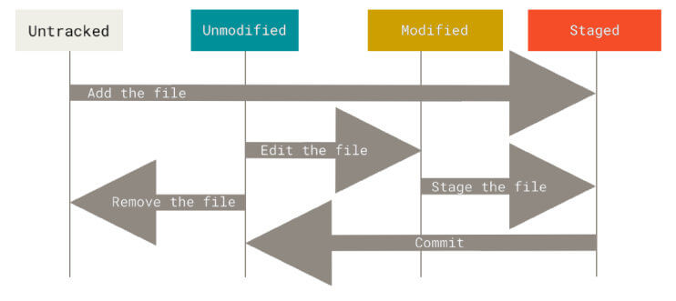
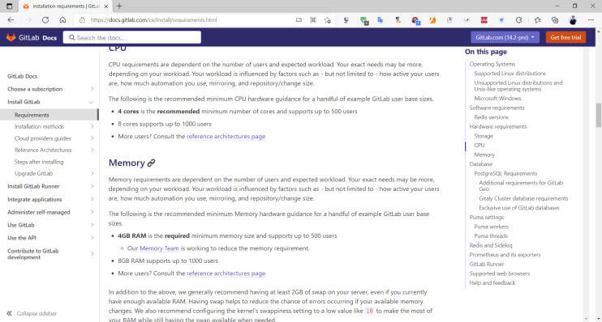
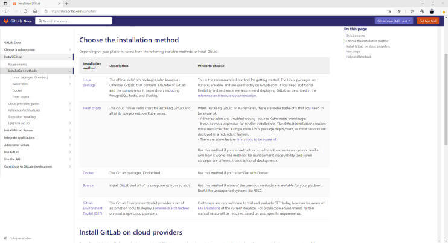

DevOps 简介 传统开发模型 软件开发生命周期 软件开发生命周期SDLC (Software Development Life Cycle)由计划，分析，设计，实现，测试集成和维护组成
阶段1: 计划和需求分析 (Planning and Requirement Analysis)
每个软件开发生命周期模型都从分析开始，过程的利益相关者讨论对最终产品的要求。此阶段的目标是系统要求的详细定义。此外，还需要确保所有流程参与者都清楚地了解任务以及每个需求将如何实施。通常，讨论涉及质量保证专家，如果有必要，他们甚至可以在开发阶段干预过程中的添加。
阶段2: 设计项目架构 (Project Architecture)
在软件开发生命周期的第二阶段，开发人员实际上正在设计架构。所有利益相关者（包括客户）都会讨论此阶段可能出现的所有不同技术问题。此外，还定义了项目中使用的技术，团队负载，限制，时间范围和预算。最合适的项目决策是根据定义的要求做出的。
阶段3: 开发和编程 (Development and Coding)
在批准要求后，该过程进入下一阶段 - 实际开发。程序员从这里开始编写源代码，同时牢记先前定义的需求。系统管理员调整软件环境，前端程序员开发程序的用户界面以及与服务器交互的逻辑。编程本身一般会用四个阶段：算法开发，源代码编写，编译，测试和调试
阶段4: 测试 (Testing)
测试阶段包括调试过程。开发过程中遗漏的所有代码缺陷都会在此处检测到，记录下来并传回给开发人员进行修复。重复测试过程，直到删除所有关键问题并且软件工作流程稳定。
阶段5: 部署 (Deployment)
当程序最终确定并且没有关键问题时 - 是时候为最终用户启动它了。新程序版本发布后，技术支持团队加入。该部门提供用户反馈; 在利用期间咨询和支持用户。此外，此阶段还包括所选组件的更新，以确保软件是最新的，并且不会受到安全漏洞的影响。
SDLC模型 (Software Development Life cycle Model)
从第一个也是最古老的“瀑布式”SDLC模型演变而来，其种类不断扩大。比较常见的SDLC模型如下
瀑布模型 (Waterfall Model)
迭代模型 (Iterative Model)
螺旋模型 (Spiral Model)
V形模型 (V-Shape Model)： 单元测试，集成测试，系统测试，验收测试
敏捷模型 (Agile Model)
瀑布模型 瀑布模型是早期实现的开发模型，是一个级联SDLC模型，其中开发过程看起来像制造业的流水线，一步一步地进行分析，预测，实现，测试，实施和支持阶段。该SDLC模型包括完全逐步执行每个阶段。该过程严格记录并预定义，具有该软件开发生命周期模型的每个阶段所期望的功能。
优点
缺点
简单易用和理解
各个阶段的划分完全固定，阶段之间产生大量的文档，极大地增加了工作量
当前一阶段完成后，只需要去关注后续阶段
由于开发模型是线性的，用户只有等到整个过程的末期才能见到开发成果，从而增加了开发风险
为项目提供了按阶段划分的检查节点
不适应用户需求的变化
敏捷开发 敏捷开发的核心是迭代开发(lterative Development)与增量开发(IncrementalDevelopment) 。
迭代开发：
对于大型软件项目，传统的开发方式是采用一个大周期(比如一年或数年)进行开发，整个过程就是一次”大开发”
迭代开发的方式则不一样，它将开发过程拆分成多个小周期，即一次”大开发”变成多次”小开发”，每次小开发都是同样的流程，所以看上去就好像重复在做同样的步骤
比如： 某米公司生产手机，第一次生产某米1代(比较简陋)，逐年再生产某米2代，目前已经到某米1X代
增量开发：
软件的每个版本，都会新增一个可以被用户感知到的完整功能。也就是说，按照新增功能来划分迭代。
比如： 房地产公司开发一个小区。如果采用增量开发的模式，该公司第一个迭代就是交付一期楼盘，第二个迭代交付二期楼盘..….每个迭代都是完成一栋完整的楼盘。而不是第一个迭代挖好所有楼的地基，第二个迭代建好每栋楼的骨架，第三个迭代架设屋顶.……..
虽然敏捷开发将软件开发分成多个迭代，但是也要求，每次迭代都是一个完整的软件开发周期，必须按照软件工程的方法论，进行正规的流程管理。
优势
尽早交付，加快资金回笼
降级风险，及时了解市场需求
提高效率，阶段性功能折分及快速质量反馈
敏捷开发这种小步快跑的方式，大幅提高了开发团队的工作效率，让版本的更新速度变得更快。
更新版本的速度快了，风险不是更大了吗？其实，事实并非如此。
敏捷开发可以帮助更快地发现问题，产品被更快地交付到用户手中，团队可以更快地得到用户的反馈，从而进行更快地响应。而且，DevOps小步快跑的形式带来的版本变化是比较小的，风险会更小（如下图所示）。即使出现问题，修复起来也会相对容易一些。
DevOps 介绍 什么是 DevOps
DevOps 即开发 Development 和 Operations运维的缩写。
DevOps的维基百科定义是这样的：
DevOps是一组过程、方法与系统的统称，用于促进开发、技术运营和质量保障（QA）部门之间的沟通、协作与整合。
DevOps 是针对开发人员、运维人员和测试人员的一种工作理念，是软件在应用开发、代码部署和质量测试等整条生命周期中协作和沟通的最佳实践
DevOps 强调整个组织的所有相关部门的紧密合作以及交付和基础设施变更的自动化、从而实现持续集成、持续部署和持续交付的目标
为什么要 DevOps 传统的模式是开发人员只关心开发程序，追求功能的变化和实现
运维只负责基础环境管理和代码部署及监控等，更看重应用的稳定运行
双方缺少一个共同的目标
DevOps 强调团队协作、相互协助、持续发展，实现团队作战，即无论是开发、运维还是测试，都为了最终的代码发布、持续部署和业务稳定而付出各自的努力，从而实现产品设计、开发、测试和部署的良性循环，实现产品的最终持续交付。
想要将DevOps真正落地，首先第一点，是思维转变，也就是“洗脑”。不仅是运维的要洗，开发的也要洗。员工要洗，领导更要洗。
DevOps并不仅仅是组织架构变革，更是企业文化和思想观念的变革。如果不能改变观念，即使将员工放在一起，也不会产生火花。
除了洗脑之外，就是根据DevOps思想重新梳理全流程的规范和标准 。
在DevOps的流程下，运维人员会在项目开发期间就介入到开发过程中，了解开发人员使用的系统架构和技术路线，从而制定适当的运维方案。而开发人员也会在运维的初期参与到系统部署中，并提供系统部署的优化建议。
DevOps的实施，促进开发和运维人员的沟通，增进彼此的理（gan）解（qing）。
DevOps组织优先推动的目标
一组标准化的环境
降低新版本的失败率
缩短版本之间的交付时间
更快的平均版本恢复时间
DevOps的关键指标
平均恢复时间： Mean-time to recovery (MTTR)
平均投产时间： Mean-time to production
平均提前时间:Average lead-time，比计划时间提前
部署速度:Deployment speed
部署频率:Deployment frequency
生产失败率:Production failure rate
DevOps 相关的软件 在思维和流程改变的同时，想要充分落地DevOps，当然离不开软件和平台的支持。目前支持DevOps的软件很多了。
DevOps 涉及的四大相关平台
项目管理：如：Jira,禅道
代码托管：如：Gitlab,SVN
持续交付：如：Jenkins,Gitlab
运维平台：如：腾讯蓝鲸,Spug等
持续集成、持续交付和持续部署 CICD 最初是瀑布模型 ，后来是敏捷开发 ，现在是DevOps ，这是现代开发人员构建出色的产品的技术路线。随着DevOps的兴起，出现了持续集成 （Continuous Integration）、持续交付 （Continuous Delivery） 、持续部署 （Continuous Deployment） 的新方法。
传统的软件开发和交付方法正在迅速变得过时。从以前的敏捷时代，大多数公司会每月，每季度，每两年甚至每年发布部署/发布软件。然而现在在DevOps时代，每周，每天，甚至每天多次是常态。
当SaaS正在占领世界时，尤其如此，您可以轻松地动态更新应用程序，而无需强迫客户下载新组件。很多时候，他们甚至都不会意识到正在发生变化。开发团队通过软件交付流水线（Pipeline）实现自动化，以缩短交付周期，大多数团队都有自动化流程来检查代码并部署到新环境。
CI/CD 是一种通过在应用开发阶段引入自动化来频繁向客户交付应用的方法。CI/CD 的核心概念是持续集成、持续交付和持续部署。作为一个面向开发和运营团队的解决方案，CI/CD 主要针对在集成新代码时所引发的问题
具体而言，CI/CD 可让持续自动化和持续监控贯穿于应用的整个生命周期（从集成和测试阶段，到交付和部署）。这些关联的事务通常被统称为“CI/CD 管道”，由开发和运维团队以敏捷方式协同支持。
CICD 红帽参考连接
1 https://www.redhat.com/zh/topics/devops/what-is-ci-cd
1 https://docs.gitlab.com/ee/ci/introduction/
持续集成 (CI-Continuous Integration) 集成指将多位开发者的开发代码提交后，合并集成在一起，存放在代码库的过程，并且后续还会不断的迭代更新代码
持续集成是指多名开发者在开发不同功能代码的过程当中，可以频繁的将代码行合并到一起并切相互不影响工作。很多情况下每天都要进行几次，主要目的是尽早发现集成错误，使团队更加紧密结合，更好地协作。
CI属于开发人员的自动化流程。成功的 CI 意味着应用代码的新更改会定期构建、测试并合并到共享存储库中。该解决方案可以解决在一次开发中有太多应用分支，从而导致相互冲突的问题。
持续集成强调开发人员提交了新代码之后，立刻进行构建、（单元）测试。
根据测试结果，可以确定新代码和原有代码能否正确地集成在一起。通过持续集成可以自动编译、打包、签名项目，配合单元测试可以实现持续集成+自动化测试。让工程师从重复而又枯燥的手动打包完全解放出来，让工程师能更加专注于代码本身，最大限度的减少误操作风险，降低修复错误代码的成本，大幅提高工作效率。
持续交付(CD-Continuous Delivery) 完成 CI 中构建及单元测试和集成测试的自动化流程后，持续交付可以自动的将已验证的代码发布到存储库。为了实现高效的持续交付流程，务必要确保 CI 已内置于开发管道。持续交付的目标是拥有一个可随时部署到生产环境的代码库。
在持续交付中，每个阶段（从代码更改的合并，到生产就绪型构建版本的交付）都涉及测试自动化和代码发布自动化。在流程结束时，运维团队可以快速、轻松地将应用部署到生产环境中。
持续交付完成了构建和测试过程细致的自动化，但是如何发布以及发布什么仍然是需要人工操作，持续部署可以改变这一点。
持续集成（CONTINUOUS INTEGRATION，CI）指的是开发人员频繁的（一天多次的）将所有开发者的工作合并到主干上。这些新提交在最终合并到主线之前，都需要通过编译和自动化测试流进行验证，以保障所有的提交在合并主干之后的质量问题，对可能出现的一些问题进行预警。持续集成的核心在于确保新增的代码能够与原先代码正确的集成。
持续交付在持续集成的基础上，将集成后的代码部署到更贴近真实运行环境的「类生产环境」（production-like environments）中。比如，我们完成单元测试后，可以把代码部署到连接数据库的 Staging 环境中更多的测试。如果代码没有问题，可以继续手动部署到生产环境中。此方式是当前普遍采用的方式
持续部署(CD-Continuous Deployment) 对于一个成熟的 CI/CD 管道来说，最后的阶段是持续部署。作为持续交付(自动将生产就绪型构建版本发布到代码存储库)的进一步延伸，持续部署可以自动将应用发布到生产环境。由于在生产之前的管道阶段没有手动风控，因此持续部署在很大程度上都得依赖精心设计的测试自动化。
实际上，持续部署意味着开发人员对应用的更改在编写后的几分钟内就能生效（假设它通过了自动化测试）。这更加便于持续接收和整合用户反馈。总而言之，所有这些 CI/CD 的关联步骤都有助于降低应用的部署风险，因此更便于以小件的方式（而非一次性）发布对应用的更改。不过，由于还需要编写自动化测试以适应 CI/CD 管道中的各种测试和发布阶段，因此前期投资还是会很大。
持续部署是基于某种工具或平台实现代码自动化的构建、测试和部署到线上环境以实现交付高质量的产品，持续部署在某种程度上代表了一个开发团队的更新迭代速率。
与持续集成相比，持续交付（CONTINUOUS DELIVERY）的侧重点在于交付，其核心对象不在于代码，而在于可交付的产物。由于持续集成仅仅针对于新旧代码的集成过程执行了一定的测试，其变动到持续交付后还需要一些额外的流程。与持续集成相比较，持续交付添加了测试Test->模拟Staging->生产Production的流程，也就是为新增的代码添加了一个保证：确保新增的代码在生产环境中是可用的。
在持续交付的基础上，把部署到生产环境的过程自动化。如果你对比上图持续部署就可以发现持续部署和持续交付的区别就是最终部署到生产环境是自动化的。因为自动发布存在较大的风险，当前采用此方式较少.
CICD 流程过程和架构 应用部署发展阶段
开发人员自行上传代码
早期项目，没有专业的运维人员，运维的工作由开发兼职完成，项目发布很不专业，很容易出错，也是最原始的方式
开发人员先将代码发给运维，再由运维人员手动上传至生产环境
专业的运维人员完成应用的部署，每次项目发布都由运维人员一步一步手动实现，效率低下且容易出错
运维利用脚本和自动化运维工具实现部署
由运维人员编写Shell,Python等脚本或利用自动化运维工具，如Ansible等实现半自动化应用部署，效率很高，但对技术的专业性有较高要求
通过 Web 等 GUI 界面实现一键自动化部署
可以通过开源或自研的运维平台实现方便的应用部署，操作容易，效率高，但需要提前构建运维平台，比如，Jenkins等
CICD 相关工具
CICD 流程
开发人员不断的进行代码提交到本地，再提交到运程的代码仓库服务器
Jenkins作为持续集成工具，使用Git工具到Git仓库拉取代码到集成服务器，代码测试与审查，再配合JDK，Maven，Go等软件完成代码编译，测试，打包等工作，在这个过程中每一步如果出错，都需要重新再执行一次整个流程。
Jenkins把生成的软件jar或war包等分发到测试服务器或者生产服务器，测试人员或用户就可以访问应用。
Kubernetes 环境的 CICD
CICD 服务器架构
DevOps 与 CICD 的联系与区别
CICD是软件工程实践的方法，需要借助于各种工具来具体实现
DevOps是一种文化：也正是容器、容器编排、微服务等技术使得DevOps最终能够以应有的方式得以落地
通常，在开发环境中自动化持续集成和持续交付(CI /CD)是DevOps团队的最终目标
版本控制系统 VCS 关于版本控制
版本控制（Version control）是维护工程蓝图的标准做法，能追踪工程蓝图从诞生一直到定案的过程
版本控制也是一种软件工程技巧，借此能在软件开发的过程中，确保由不同人所编辑的同一程序文件都得到同步
软件工程师常利用版本控制来跟踪、维护原始码、文档以及配置文件等的改动
软件版本控制的方法
最简单的情况下，软件设计师可以自己保留一个程序的许多不同版本，并且为它们做适当的编号
这种简单的方法曾被用在很多大型的软件项目中
虽然可行，但效率较低
必须同时维护很多几乎一样的原始码备分，而且极度依赖软件设计师的自我修养与开发纪律
使用版本控制系统（Version Control System，VCS），实现部分或全部版本控制工作的自动化，版本控制系统是一种软件，可以帮助软件团队的开发人员协同工作，并存档他们工作的完整历史记录。
为什么使用 VCS ?
在实际开发过程中，经常会有这种需求或问题
代码可能被破坏，比如误删除等，希望还能找回
代码出现了严重的Bug,希望回滚至数周前的旧代码
需要在已经发布的程序中添加新的功能，如果测试验证后没有问题，才会使用新的代码，而在测试验证期间，不能影响原来的代码
同一个软件需要有多个版本并行开发，满足不同的应用需求 实际项目开发基本都是多个人合作完成，在多个人写代码时，就牵扯到代码合并成一份的问题。
异地源代码备份，使用 VCS 时，需要创建一个 VCS 的远程实例，以在开发人员之间共享更改，这个远程 VCS 实例可以由值得信赖的第三方（如GitHub）进行异地托管；然后，它就会成为安全的异地备份
版本控制系统分类
本地版本控制系统
第一代版本控制系统被称为本地版本控制系统。通过加锁将并发执行转换成顺序执行。 一次只能有一个人处理文件。
具体流程如下：首先，应该把文件放在一个服务器上，方便使用者上传或下载文件；其次，任何人想对文件修改时，需要先把这个文件加锁，通过checkout指令，使得其他人无法修改；最后，当修改完成之后，需要释放锁，通过checkin指令，形成一个新的版本，存放到服务器端。
第一代版本控制系统主要有 RCS、SCCS（1972年发布）和 DSEE（被认为是 Atria ClearCase 的前身）。目前，有些项目还在使用
1 2 3 4 5 6 7 8 9 悲观锁 每次获取数据的时候，都会担心数据被修改，所以每次获取数据的时候都会进行加锁，确保在自己使用的 过程中数据不会被别人修改，使用完成后进行数据解锁。由于数据进行加锁，期间对该数据进行读写的其 他线程都会进行等待。 乐观锁 每次获取数据的时候，都不会担心数据被修改，所以每次获取数据的时候都不会进行加锁，但是在更新数 据的时候需要判断该数据是否被别人修改过。如果数据被其他线程修改，则不进行数据更新，如果数据没 有被其他线程修改，则进行数据更新。由于数据没有进行加锁，期间该数据可以被其他线程进行读写操作。 乐观锁一般会使用版本号机制或 CAS 算法实现。
用户想要完成任何的提交和回滚都依赖于连接集中的代码服务器才能实现，比如下班回家后，如果无法连接至代码的服务器，将无法提交代码
此外此集中式服务器还存在单点问题，在集中式实例的不可用期间，开发人员就无法推送、合并或回滚代码
此方式可以更好的实现软件仓库的安全访问限制和控制
分布式版本控制系统
在每个用户都有一个完整的服务器，用于保存软件的完整版本，然后再部署一个中央服务器
用户可以先将代码提交到本地，没有网络也可以先提交到本地，然后在有网络的时候再提交到中央服务器，这样就大大方便了开发者
相比集中式的版本控制系统，工作的时候需要先从中央服务器获取最新的代码，改完之后需要提交，如果是一个比较大的文件则需要足够快的网络才能快速提交完成
而使用分布式的版本控制系统，每个用户都是一个完整的版本库，即使没有中央服务器也可以提交代码或者回滚，最终再把改好的代码提交至中央服务器进行合并即可。
此方式不容易实现软件仓库的安全访问限制和控制
常见的版本控制系统
CVS(Concurrent Version System) 集中式版本控制系统 并发版本系统（Concurrent Versions System，CVS）是最初的第二代版本控制系统。大约十年间，它是最为流行的版本控制系统，直到 2000 年被 Subversion 所取代。
CVS 最早是由一位名叫 Dick Grune 的荷兰科学家于 1986 年 6 月 23 日公开发布了该代码。CVS 最初仅仅只是一个包装了 RCS（ 修订控制系统(Revision Control System)) 的 Shell 脚本集合。最终演变成当前版本的 CVS 的代码始于 1989 年 4 月的 Brian Berliner 的贡献，后来由 Jeff Polk 和许多其他贡献者提供帮助。 Brian Berliner 撰写了一篇论文，介绍了他对 CVS 程序的改进 - 该程序描述了该工具是如何在 Prysma 内部扩展和使用的。 1990 年 11 月 19 日，CVS 1.0 版被提交给自由软件基金会进行开发和分发。
CVS是一个C/S系统，是一个早期常用的代码版本控制软件。多个开发人员通过一个中心版本控制系统来记录文件版本，从而达到保证文件同步的目的。CVS版本控制系统是一种GNU软件包，主要用于在多人开发环境下的源码的维护。
由于 CVS 是集中式版本控制系统，所以它有客户端和服务端之区分。但要开始使用 CVS 的话，即使只在你的本地机器上使用，也必须设置 CVS 的服务端。
SVN(Subversion) 集中式版本控制系统 SVN 由 CollabNet 公司于 2000 年资助并发起开发，目的是创建一个更好用的版本控制系统以取代CVS。
2000 年 2 月，CollabNet 联系了 Open Source Development with CVS（Coriolis, 1999）的作者 Karl Fogel，问他是否愿意为这个新项目工作。这时 Karl 已经在和他的朋友 Jim Blandy 讨论一个新的版本控制系统的设计。他不仅已经起好了名字 “Subversion”，而且有了 Subvesion 资料库的基本设计。
经过 14 个月的编码，在 2001 年 8 月 31 号，Subversion 可以“自我寄生”了。就是说，Subversion 开发人员停止使用 CVS 管理 Subversion 的源代码，开始使用 Subversion 代替。
2009 年 11 月，Subversion 被 Apache Incubator 项目所接收。2010 年 1 月，正式成为 Apache 软件基金会的一个顶级项目
SVN 依赖于网络，需要在各个开发主机上安装客户端软件，并且在一台服务器集中进行版本管理和存储.目前依然有部分公司在使用
优点 ：
管理方便，逻辑明确，符合一般人思维习惯。
易于管理，集中式服务器更能保证安全性。
代码一致性非常高。
适合开发人数不多的项目开发。
缺点 ：
服务器压力太大，数据库容量暴增。
如果不能连接到服务器上，基本上不可以工作，如果服务器不能连接上，就不能提交，还原，对比等等。
不适合开源开发（开发人数非常非常多，但是Google app engine就是用svn的）。但是一般集中式管理的有非常明确的权限管理机制（例如分支访问限制），可以实现分层管理，从而很好的解决开发人数众多的问题。
Git
在 Linux 开源的初期，Linux 开源项目的代码是 linus 本人通过 linux 命令 diff 和 patch 两条命令手动完成。随着 Linux 代码越来越壮大，靠 Linus 一个人来手动合并已经不现实。2002 年，Linus 选择了一个商业版本控制系统 BitKeeper 作为 Linux 内核的代码管理工具（BitKeeper 的开发商 BitMover 授权 linux 社区免费使用）。但是，免费使用是有很多的限制的，因此 linux 社区的大佬开始破解 BitKeeper。其中，samba 的作者 andrew 破解成功了。但是被 BitMover 公司发现，收回免费使用权。
迫不得已，Linus 选择了自己开发一个分布式版本控制工具以替代 BitKeeper。linus 闭关一个月，写出了 Git。在一个月后，Git 成功接管了 Linux 社区的版本控制工作，并且开始开源。维基百科中，有如下历史记录：
1 2 3 4 5 6 7 8 2005年4月3日，开始开发 Git。 2005年4月6日，项目发布。 2005年4月7日，Git就可以作为自身的版本控制工具了。 2005年4月18日，发生第一个多分支合并。 2005年4月29日，Git 的性能就已经达到了 Linus 的预期。 2005年6月16日，Linux 2.6.12 发布，那时 Git 已经在维护 Linux 核心的源代码了。 2005年7月26日，Linus 功成身退，将 Git 的维护交给另外一个 Git 的主要贡献者 Junio C Hamano。 2016年5月，BitKeeper宣布使用 Apache 2.0许可证开源。
Git 重要特性：
在本地就可以完成提交，因此不需要网络，提交完成后，可以有网络环境时，再同步到远程仓库服务器
优点：
适合分布式开发，强调个体。
公共服务器压力和数据量都不会太大。
速度快、灵活。
任意两个开发者之间可以很容易的解决冲突。
支持离线工作。
缺点：
不符合常规思维。
学习周期相对而言比较长。
代码保密性差，一旦开发者把整个库克隆下来就可以完全公开所有代码和版本信息。
Github 网站 2008年1月，Wanstrath和Preston-Werner推出使用Ruby on Rails编写而成的GitHub的个人测试版。2月，他们又增加了第三位联合创始人PJ Hyett，到2008年3月，GitHub的beta版已经拥有了2000名用户。GitHub于2008年4月推出公共版本，然后逐渐在开发者社区中流行起来，到2009年7月，用户数量达到了10万。
由于GitHub在软件开发人员中很受欢迎，成立后的四年，GitHub通过向个人程序员和企业收取每月访问平台的费用，在没有外部资金的情况下得以生存下来。
GitHub网站为开源项目免费提供Git存储，无数开源项目开始迁移至GitHub，包括jQuery，PHP，Ruby等等。GitHub同时提供付费账户和免费账户。这两种账户都可以创建公开的代码仓库，但是只有付费账户可以创建私有的代码仓库。
2018年6月5日 微软花费 75 亿美元收购 GitHub
2019年1月7日 免费的 GitHub 用户现在可以获得不受限制的私人项目，最多可以有三个协同合作者
2020年4月14日 GitHub宣布向所有用户和团队提供不限制协作人数的私有仓库，同时GitHub的核心功能对所有人免费开放
官网： http://www.github.com
GitLab 网站和软件 Github 提供了公有云的软件仓库服务，但实现私有仓库早期是收费的，而GitLab的出现解决了这一问题。GitLab由乌克兰程序员DmitriyZaporozhets和ValerySizov开发，它使用Ruby语言写成。后来，一些部分用Go语言重写，是完全免费的开源软件，按照MIT许可证分发。2013年7月，GitLab产品被拆分为两个版本：GitLab CE（社区版）和GitLab EE（企业版），2014年2月，GitLab宣布采用开放核心业务模式。GitLabEE设置在专有许可证下，并且包含CE版本中不存在的功能。GitLabCE是使用MIT许可证的基于网络的Git仓库管理工具，且具有wiki和issue跟踪功能。使用Git作为代码管理工具，并在此基础上搭建起来的Web服务。
从安全方面来看，公司不希望员工获取到全部的代码，这个时候GitLab是最佳的选择。但对于开源项目而言，GitHub 依然是代码托管的首选平台。
GitLab 官方网站： https://about.gitlab.com/
Gitlab 企业版：
Gitlab 的优势
开源免费，搭建简单、维护成本较低、可适用于中小型公司内部项目使用。
权限管理功能强大灵活，能实现代码对部分人可见，确保项目的安全性。
支持离线提交，基于git实现，可以不在实时依赖网络环境进行代码提交。
常见的软件部署模式 蓝绿部署 Blue-green Deployments
蓝绿部署指的是不停止老版本代码(不影响上一个版本访问)，而是在另外一套环境部署新版本然后进行测试，测试通过后将用户流量切到新版本，其特点为业务无中断，升级风险相对较小。但本方式成本较高， 一般小公司较少使用
蓝绿色部署是一种部署策略，利用两种相同的环境，即”蓝色”（又名预发布）环境和”绿色”（又名生产）环境，具有不同版本的应用程序或服务。质量保证和用户接受度测试通常在承载新版本或更改的蓝色环境中进行。一旦蓝色环境中测试并接受新的变化，用户流量就会从绿色环境切换为蓝色环境。然后，一旦部署成功，您可以切换到新环境。
具体过程：
1、当前版本(V1)业务正常访问
2、在另外一套环境部署新代码版本(V2)，代码可能是增加了功能或者是修复了某些bug
3、测试通过之后将用户请求流量切到新版本环境
4、观察一段时间，如有异常直接切换旧版本
5、下次升级，将旧版本(V2)升级到新版本(V3)
蓝绿部署适用的场景：
1、不停止老版本，额外部署一套新版本，等测试确认新版本正常后，才将用户请求切换至新版本，如果有问题，切换回老版本
2、蓝绿发布是一种用于升级与更新的发布策略，部署的最小维度是容器，而发布的最小维度是应用。
3、蓝绿发布对于增量升级有比较好的支持，但是对于涉及数据表结构变更等等不可逆转的升级，并不完全合适用蓝绿发布来实现，需要结合一些业务的逻辑以及数据迁移与回滚的策略才可以完全满足需求。
金丝雀(灰度)发布 Canary Deployment
“金丝雀”的由来：17世纪英国矿井工人发现，金丝雀对瓦斯这种气体十分敏感。空气中哪怕有极其微量的瓦斯，金丝雀也会停止歌唱；而当瓦斯含量超过一定限度时，虽然人类毫无察觉，金丝雀却早已毒发身亡。当时在采矿设备相对简陋的条件下，工人每次下井都会带上一只金丝雀作为“瓦斯检测指标”，以便在危险状况下紧急撤离。
金丝雀发布也叫灰度发布，是指在黑与白之间，能够平滑过渡的一种发布方式，灰度发布是增量发布（例如：2%、25%、75%、100%）进行更新)的一种类型，灰度发布是在原有版本可用的情况下，同时部署一个新版本应用作为“金丝雀”(小白鼠)，测试新版本的性能和表现，以保障整体系统稳定的情况下，尽早发现、调整问题。因此，灰度发布可以保证整体系统的稳定，在初始灰度的时候就可以发现、调整问题，以保证其影响度。
此方式在实际生产中使用较为普遍
金丝雀/灰度发布步骤组成：
1、准备好部署各个阶段的工件，包括：构建组件，测试脚本，配置文件和部署清单文件。
2、从负载均衡列表中移除掉“金丝雀”服务器（选择全部服务器中的一部分）。
3、升级“金丝雀”应用（排掉原有流量并进行部署）。
4、对应用进行自动化测试。
5、将“金丝雀”服务器重新添加到负载均衡列表中（连通性和健康检查）。
6、如果“金丝雀”在线使用测试成功，升级剩余的其他服务器。否则就回滚回旧版本
金丝雀/灰度发布部署适用的场景：
1、不停止老版本，额外搞一套新版本，不同版本应用共存。
2、灰度发布中，常常按照用户设置路由权重，例如90%的用户维持使用老版本，10%的用户尝鲜新版本。
3、经常与A/B测试一起使用，用于测试选择多种方案。
滚动发布(更新) 滚动发布故名思议，就是逐步升级服务中的节点
滚动发布是指每次只升级一个或多个服务实例，升级完成后加入生产环境，不断执行这个过程，直到集群中的全部旧版本升级新版本。
红色：正在更新的实例
蓝色：更新完成并加入集群的实例
绿色：正在运行的实例
滚动发布过程
先升级1个服务实例，主要做部署验证；
每次升级1个服务实例，自动从LB上摘掉，升级成功后自动加入集群
事先需要有自动更新策略，分为若干次，每次数量/百分比可配置
回滚是发布的逆过程，先从LB摘掉新版本，再升级老版本，这个过程一般时间比较长
自动化要求高
A/B测试 A/B Testing
A/B测试即同时对外提供两个APP运行环境，这和蓝绿部署的同时只有一个版本在线是不同的
A/B 测试是用来测试应用功能表现的方法，例如可用性、受欢迎程度、可见性等等
蓝绿部署和A/B测试是不同的，蓝绿部署的目的是安全稳定地发布新版本应用，并在必要时回滚，即蓝绿部署是同一时间只有一套正式环境在线，而A/B测试是两套正式环境同时在线，一般用于多个产品竟争时使用
版本控制系统 Git 数据保存方式 1 https://git-scm.com/book/zh/v2/起步-Git-是什么？
SVN 与 CVS：
每次提交的文件都单独保存， 即按照文件的提交时间区分不同的版本， 保存至不同的逻辑存储区域，后期恢复时候直接基于之前版本恢复。 将它们存储的信息看作是一组基本文件和每个文件随时间逐步累积的差异 （它们通常称作基于差异（delta-based） 的版本控制）
Git:
在 Git中，每当你提交更新或保存项目状态时，它基本上就会对当时的全部文件创建一个快照并保存这 快照的索引。为了效率，如果文件没有修改，Git 不再重新存储该文件，而是只保留一个链接指向之前存储的文件。 Git 对待数据更像是一个 快照流。
Git和SVN区别
git是分布式的,svn是集中式的
git是每个历史版本都存储完整的文件，便于恢复,svn是存储差异文件
git可离线完成大部分操作,svn则不能
git有着更优雅的分支和合并实现
git有着更强的撤销修改和修改历史版本的能力
git速度更快，效率更高
Git 相关概念和原理 Git 的区域
工作区 workspace：clone的代码或者开发编写代码文件所在的目录 ，通常是一个服务代码所在的目录名称 ，对应于<项目目录>
工作区中的文件的变更不受Git的跟踪和管理，无法实现版本回滚等功能
需要将工作的的变更，通过 add 命令加入暂存区后，才可纳入Git 的版本管理控制的范畴
暂存区（索引区，缓存区）index ：用于存储在工作区中对代码进行修改后的文件所保存的地方，只有放入此区的文件才能被git进行管理，使用 git add添加，对应为<项目目录>/.git/index文件
暂存区主要用于临时保存文件少量变更，类似于邮件中的草稿箱
当变更累积到一定阶段，希望生成里程碑式的结果时，会使用commit，将暂存区的变更一次性的批量提交到本地仓库
本地仓库repo： 用于存储在工作区和暂存区中改过并提交的文件地方，使用 git commit 提交，对应于/<项目目录>/.git/
每一次commit 会生成一个唯一的ID，通常用于表示一个阶段性的新的版本
checkout命令执行了同commit命令相反的操作，它将版本中存储的commit所代表着的某个版本恢复至工作区中
checkout命令完成后，工作区中的文件内容与其检出的提交那一刻的状态相同
若工作区中存储此前未被提交的新文件，这些文件的未被提交的新的更改会被存储仓库的旧内容覆盖
当然，用户也可以暂存这些新文件，并将带有新文件的工作区提交到版本库中，这将是新的暂存和提交循环
远程仓库 ：多个开发人员共同协作提交代码的仓库，即 私有 gitlab 服务器或公有云github,gitee网站等
利用远程仓库，可以实现异地备份和远程协作
Git 文件的状态变化周期 文件状态变化

untracked: 在工作目录下创建的新文件，这个时候本地git仓库不知道，不能对其进行版本跟踪管理
unmodified: 添加到暂存区的文件未修改，并已经把文件从暂存区推动到了本地仓库
modified: 已经添加到暂存区的文件，在本地工作区的文件被修改了 ，需要重新添加至暂存区
staged: 文件添加到了暂存区
unstaged: 已被跟踪的工作区的文件发生更新，但还没有存入暂存区中
Git 提交历史和提交链
版本库上的commit历史组合起来会形成一个提交链
除了初始commit，每个commit都会都会有一个父commit，也可能会有多个父commit(比如：分支合并)
除了最新一次的commit，每个commit都会有一个子commit，也可能会有多个子commit(比如：创建新分支)
这个提交链上的commit还可以使用字符串进行引用
通常，Git会为默认创建的提交链上的最新一次提交创建一个基于字符串的引用master/main
而该提交链也称为版本库的一个分支（Branch），master/main 也是分支的名称标识
另外自动创建的还有一个HEAD引用，它代表提交链的“头”，表示当前工作区所关联到的提交链上的特定提交，通常是最新一次提交
基于HEAD指向的commit，还能够以相对方式引用历史中的提交，例如HEAD~表示前一个提交
git show HEAD命令可以查看HEAD当前所指向的commit的信息
Git 分支和标签 1 https://git-scm.com/book/zh/v2/Git-分支-分支简介
分支： Git 的分支，其实本质上仅仅是指向提交对象的可变指针。
Git 的默认分支名字是 master/main 。 在多次提交操作之后，你其实已经有一个指向最后那个提交对象的 master/main 分支。 master 分支会在每次提交时自动向前移动。
Git的分支实现对文件的多个副本，可以实现多个不同用途的软件版本同时的演进，实现多个开发版本的隔离
假设准备开发一个新功能，但是需要两周才能完成，第一周写了50%的代码，如果立刻提交，由于代码还没写完，不完整的代码库会导致别人不能测试等工作。如果等代码全部写完再一次提交，又存在丢失每天进度的巨大风险。
现在有了分支，就不用担心了。你创建了一个独立的分支，对其他人是透明的，没有影响，他们还继续在原来的分支上正常工作，而你在自己的分支上工作，想提交就提交，直到开发完毕后，再一次性合并到原来的分支上，这样既安全，又不影响别人工作。
tag: 给某个状态打个标签用于记录当前状态，相当于里程碑性的提交
tag是git版本库的一个标记，指向某个commit的指针。为某个commit添加一个标签，从而对其完成特殊标记，例如标记特定的版本信息
tag主要用于发布版本的管理，一个版本发布之后，可以为git打上 v1.0.1,v1.0.2 …这样的类似的标签。
通常，用户应该每天下班前提交代码并完成推送，以备份代码；只有待需要发一个版本时，才会基于tag对相应commit进行标记
tag跟branch有点相似，但是本质上和分工上是不同的：
tag 对应某次commit, 是一个点，是不可移动的。
branch 对应一系列commit，是很多提交点连成的一根线形成的，有一个HEAD 指针，是可以依靠HEAD 指针移动的。
所以，两者的区别决定了使用方式，改动代码用 branch ，不改动只查看用 tag。
tag 和 branch 的相互配合使用，有时候起到非常方便的效果
例如：已经发布了 v1.0 v2.0 v3.0 三个版本，这个时候，我突然想不改现有代码的前提下，在 v2.0 的基础上加个新功能，作为 v4.0 发布。就可以检出 v2.0 的代码作为一个 branch ，然后作为开发分支。
常用的版本标记格式
version-number.release-no.modificaton-no (e.g.， v1.3.2)
version-number.release-no.upgrade-no_modificaton-no (e.g.， v1.9.3_6)
Git 开发分支流程 分支管理是现代版本控制系统在记录版本和变更记录之外的另一个非常重要的功能
团队于同一个项目上协作时，分支管理是不可或缺的重要功能，因为它隔离不同开发人员的改动，为每个人提供一个相对独立的空间隔离团队根据布节奏要实现的代码提交、审核、集成和测试等工作
“如果说多人软件协作项目中有一个灵魂的话，我认为，这个灵魂就是分支策略。可以说，分支策略就是软件协作模式和发布模式的风向标。选择一种符合 DevOps 开发模式的分支策略，对于 DevOps 的实践落地也会大有帮助。” —— 石雪峰
几种常见的分支模型
master：开发、测试和发布都在master分支上完成
简单，但开发、测试和发布彼此影响，仅适用于单feature且无构建过程的场景
master/develop： 在开发分支开发，完成后合并至master分支
短期分支，develop分支的开发不会影响到master分支的构建过程，但不利于同时开发多个 feature；适用于单feature，可从master执行构建的场景
master 长期分支，记录发布历史
develop 长期分支，记录变更历史
master/develop/feature
开发人员工作在各自的feature分支上，feature分支经过开发、模块测试后合并到develop分支develop分支代码经过系统测试，release之后合并到master分支，release是短期分支多个feature有利于更大规模的合作，但release独立分支中的bug修复变更与develop上的变更可能会导致冲突；因而，适用于多feature，develop在release过程中不会修改的场景feature短期分支，保存研发人员研发过程
master/develop/feature/release
在前一分支模型的基础上，使用单独的release分支进行构建和bug修复
避免了因发布操作而阻塞了develop分支上的变更，但release分支存在的时间越长，导致develop合并冲突的可能性越大；因此，适用于多feature开发，但develop功能不受release影响的场景
release：短期分支，承载发布过程
master/develop/feature/release/hotfix
从master单独拉一个短期的hotfix分支进行问题修复
解决了前一模型中hotfix和develop冲突的问题
适用于多feature开发的场景，release不受线上版本hotfix的影响
hotfix: 从master拉出来的分支，短期分支
git-flow
master 只能用来存储产品代码，不能直接工作在 master 分支上 ，而是在其他指定的、独立的特性分支中，避免直接提交改动到 master 分支上也是很多工作流程的一个共同准则
develop 是 进行任何新的开发的基础分支，develop是任何feature分支的父分支，用于汇集所有feature上的代码，并在必要时合并至master分支
develop分支上的代码来自于 feature、release 和 bugfix 分支
master分支上的代码来自于 release 和 bugfix 分支
master 和develop都是长期分支，它们会存活在项目的整个生命周期中，而各feature分支、release分支和bugfix分支均为临时分支，每次的使命完成后即被删除
Git 使用远程仓库
通过远程仓库，基于HTTP、SSH 及 Git 多种传输协议可以实现异地备份和远程协作
推送代码至远程仓库的步骤
在某个Git托管服务上注册一个账号，比如：GitHub，Gitee，GitLAB
在Git托管服务上创建一个仓库
在本地版本库上，使用git remote add 命令添加关联的远程库
远程仓库，一般默认名称为origin
相关的url在远程库上可以直接获取到
git push 推送本地仓库到远程仓库，git pull 可以拉取远程仓库代码到本地现在仓库中
没有本地仓库的其它主机通过git clone 可以将远程仓库克隆到本地
设定远程仓库
添加： git remote add
列出： git remote -v
删除： git remote rm
重命名： git remote rename
克隆远程仓库
克隆： git clone
克隆到指定工作目录： git clone
远程协作
抓取远程仓库所有分支上的变更： git fetch
抓取远程仓库指定分支上的变更： git fetch
列出所有远程分支：git branch -r 将远程分支合并至本地分支，通常应该将存在映射关系（通常为同一个分支名称）的分支进行合并
git checkout
git merge origin/
拉取远程仓库上的变更
拉取并合并当前分支映射的远程分支上的变更至本地工作区：git pull
git pull 相当于如下两个命令生成的结果
推送本地变更到远程仓库
推送指定的分支：git push
推送本地仓库中的所有分支：git push –all
推送本地仓库中的所有标签：git push –tag
Git 安装 Linux 安装 git 1 https://git-scm.com/download/linux
二进制包安装 CentOS和Ubuntu 系统源都带有git版本，可以直接安装
范例： Ubuntu 安装 git
1 2 3 4 5 6 7 8 9 10 11 12 [root@ubuntu2004 ~] [root@ubuntu2004 ~] [root@ubuntu2004 ~] git version 2.25.1 [root@ubuntu2204 ~] git version 2.34.1 [root@ubuntu1804 ~] [root@ubuntu1804 ~] [root@ubuntu1804 ~] git version 2.17.1
范例： Rocky安装git
1 2 3 [root@rocky8 ~] [root@rocky8 ~] git version 2.27.0
源码编译安装 源码下载
1 2 https://www.kernel.org/pub/software/scm/git https://github.com/git/git/tags
范例：Ubuntu 编译安装 git
1 2 3 4 5 6 7 8 9 [root@ubuntu2204 ~] [root@ubuntu2204 ~] [root@ubuntu2204 ~] [root@ubuntu2204 git] [root@ubuntu2204 git] [root@ubuntu2204 git] [root@ubuntu2204 git] [root@ubuntu2204 ~] git version 2.39.1.388.g2fc9e9ca3c
范例： Rocky 8 编译安装git
1 2 3 4 5 6 7 8 9 10 11 12 13 14 15 16 17 18 [root@rocky8 ~] [root@rocky8 ~] [root@rocky8 ~] [root@rocky8 ~] [root@rocky8 src] [root@rocky8 git-2.33.0] [root@rocky8 ~] [root@rocky8 ~] [root@rocky8 git-2.33.0] [root@rocky8 git-2.33.0] [root@rocky8 git-2.33.0] [root@rocky8 git-2.33.0] [root@rocky8 git-2.33.0] [root@rocky8 git-2.33.0] git version 2.33.0
Windows 安装 git 1 https://git-scm.com/downloads
**注意： **
Windows 版本的 git 在提交前，必须配置邮箱和用户名
git clone 时提交的用户密码信息会记录在凭据管理器中Windows凭据的普通凭据中，即修改密码后，需要删除凭据中密码
Mac 安装 git 1 https://git-scm.com/download/mac
Git 常用语法 使用 git 命令添加代码，提交等管理代码操作
Git 用法说明 官方文档：
1 2 https://git-scm.com/docs https://git-scm.com/book/zh/v2
区域间文件操作
git 命令常见用法
1 2 3 4 5 6 7 8 9 10 11 12 13 14 15 16 17 18 19 20 21 22 23 24 25 26 27 28 29 30 31 32 33 34 35 36 37 38 39 40 41 42 43 44 45 46 47 48 49 50 51 52 53 54 55 56 57 58 59 60 61 62 63 64 65 66 67 68 69 70 71 72 73 74 75 76 77 78 79 80 81 82 83 84 85 86 87 88 89 90 91 92 93 94 95 96 97 98 99 100 101 102 103 104 105 106 107 108 109 110 111 112 113 114 115 116 117 118 119 120 121 122 123 124 125 126 127 128 129 git help <子命令> git <子命令> --help man git-<子命令> git version git init git init --bare git clone http://url git clone -b develop http://url git clone -b tag http://url git config --global user.name "wangxiaochun" git config --global user.email "29308620@qq.com" git config --global color.ui true git config --global core.editor vim git config --global --list|-l git config --global -e git add index.html / . git mv file_oldname file_newname git rm --cached file git rm file git checkout file git restore --staged <file> git restore <file> git restore -s <source > <pathspec> git ls-files git cat-file -p <blogid> git diff [<path>...] git diff --staged|cached [<path>...] git diff [<commit>] [--] [<path>...] git diff <commit>...<commit> [--] [<path>...] git commit -m “comment“ git commit -am "comment" git commit --amend --no-edit git commit --amend -m "comment" git show HEAD git status git log git log --oneline git log --oneline -N git log --pretty=oneline git log --stats git log -p [commit_id] git log --author="<author-name-pattern>" git log <file-pattern> git log origin/main git reflog git reset --hard|soft|minxed HEAD^^ git reset --hard|soft|minxed HEAD~n git reset --hard|soft|minxed 5ae4b06 git reset --hard|soft|minxed v1.0 git branch git branch -av git branch <分支名> git branch <分支名> <commit_id> git branch -d <分支名> git branch -m dev develop git branch -M main git branch -r git checkout <分支名> git checkout v1.0 git checkout -b <分支名> git checkout -b <分支名> origin/<分支名> git checkout [<commit>]-- <file> ... git merge master -m <message> git merge orgin/<branch_name> git merge --abort git tag <tagname> git tag -a <tagname> -m <message> git tag -a <tagname> -m <message> <commit_id> git tag -d <tagname> git reset --hard <tagname> git tag git tag -l [<pattern>] git show <tagname> git remote -v git remote show origin git remote add origin git@gitlab.example.com:testgroup/testproject.git git remote rename origin new-origin git remote remove origin git push git push origin master git push origin dev git push -u|--set-upstream origin master git push origin main:dev git push origin :dev git push -u origin --all git push origin <tagname> git push origin --tag <tagname> git push origin --tags git push --delete origin <tagname> git pull git pull origin dev git fetch <remote_name> git fetch origin master vim .gitignore
git log 显示日志格式
1 git log --graph --pretty=format:'参数'
参数说明
选项
说明
%H提交的完整哈希值
%h提交的简写哈希值
%T树的完整哈希值
%t树的简写哈希值
%P父提交的完整哈希值
%p父提交的简写哈希值
%an作者名字
%ae作者的电子邮件地址
%ad作者修订日期（可以用 –date=选项 来定制格式）
%ar作者修订日期，按多久以前的方式显示
%cn提交者的名字
%ce提交者的电子邮件地址
%cd提交日期
%cr提交日期（距今多长时间）
%s提交说明
Git 案例 创建项目并初始化配置 1 2 3 4 5 6 7 8 9 10 11 12 13 14 15 16 17 18 19 20 21 22 23 24 25 26 27 28 29 30 31 32 33 34 35 36 37 38 39 40 41 42 43 44 45 46 47 48 49 50 51 52 53 54 55 56 57 58 59 60 61 62 63 64 [root@gitlab ~] [root@gitlab ~] [root@gitlab testproject] [root@gitlab testproject] . .. .git [root@gitlab testproject] .git ├── branches ├── config ├── description ├── HEAD ├── hooks │ ├── applypatch-msg.sample │ ├── commit-msg.sample │ ├── fsmonitor-watchman.sample ├── info │ └── exclude ├── objects │ ├── info │ └── pack └── refs ├── heads └── tags 9 directories, 17 files [root@gitlab ~] [root@gitlab ~] [root@gitlab ~] [root@gitlab ~] [root@gitlab ~] [root@gitlab ~] user.name=wangxiaochun user.email=root@wangxiaochun.com core.editor=vim 更高 core.ui=true [root@gitlab ~] [user] name = wangxiaochun email = 29308620@qq.com [root@gitlab ~] [root@gitlab ~] [root@gitlab ~]
添加暂存区并提交数据 1 2 3 [root@gitlab testproject] [root@gitlab testproject] [root@gitlab testproject]
注意：
设置忽略文件 配置.gitignore文件让 Git 不再管理当前目录下的某些文件。
生产中有如下几类文件可能需要忽略
程序运行时产生的临时文件
程序连接数据库这一类的配置文件
程序本地开发使用的图片文件
其它不想被共享的文件
范例： 忽略指定文件
1 2 3 4 5 6 7 8 9 10 11 12 13 14 15 16 17 18 19 20 21 22 23 24 [root@gitlab testproject] /bin /target .classpath .project .settings *.h !test.h *.py[c|x] *.class *.swp *.exe temp/ [root@gitlab testproject] [root@gitlab testproject]
将文件加入暂存区再取消添加 1 2 3 4 5 6 7 8 9 10 11 12 13 14 15 16 17 18 19 20 21 22 23 24 25 26 27 28 29 30 31 32 33 34 35 36 37 38 39 40 41 42 43 44 45 46 [root@gitlab testproject] [root@gitlab testproject] On branch master No commits yet Untracked files: (use "git add <file>..." to include in what will be committed) f1.txt nothing added to commit but untracked files present (use "git add" to track) [root@gitlab testproject] [root@gitlab testproject] f1.txt [root@gitlab testproject] On branch master No commits yet Changes to be committed: (use "git rm --cached <file>..." to unstage) new file: f1.txt [root@gitlab testproject] [root@gitlab testproject] [root@gitlab testproject] On branch master No commits yet Untracked files: (use "git add <file>..." to include in what will be committed) f1.txt nothing added to commit but untracked files present (use "git add" to track) [root@gitlab testproject]
查看暂存区的文件内容 1 2 3 4 5 6 7 8 9 10 11 12 13 14 15 [root@rocky8 testproject] [root@rocky8 testproject] [root@rocky8 testproject] 100644 4871fd52755be519c29ae719f385bd5f2863627c 0 test.txt [root@rocky8 testproject] .git/objects/48/71fd52755be519c29ae719f385bd5f2863627c: VAX COFF executable -version 20741 [root@rocky8 testproject] 4871fd52755be519c29ae719f385bd5f2863627 blob [root@rocky8 testproject] 4871fd52755be519c29ae719f385bd5f2863627c test.txt
利用暂存区恢复误删除的工作区文件 1 2 3 4 5 6 7 8 9 10 11 12 13 14 15 [root@gitlab testproject] [root@gitlab testproject] [root@gitlab testproject] README.md b.txt test.txt [root@gitlab testproject] [root@gitlab testproject] README.md [root@gitlab testproject] [root@gitlab testproject] README.md test.txt
同时删除工作区和暂存区 1 2 3 4 5 6 7 8 9 10 11 12 13 14 15 16 17 18 [root@gitlab testproject] [root@gitlab testproject] [root@gitlab testproject] f1.txt f2.txt [root@gitlab testproject] f1.txt f2.txt [root@gitlab testproject] rm 'f2.txt' [root@gitlab testproject] f1.txt [root@gitlab testproject] f1.txt
回滚工作区的文件为暂存区中版本 1 2 3 4 5 6 7 8 9 10 11 12 13 14 15 16 17 18 19 20 21 22 23 24 25 26 27 [root@gitlab testproject] [root@gitlab testproject] On branch master Untracked files: (use "git add <file>..." to include in what will be committed) f1.txt nothing added to commit but untracked files present (use "git add" to track) [root@gitlab testproject] [root@gitlab testproject] [root@gitlab testproject] On branch master Changes to be committed: (use "git restore --staged <file>..." to unstage) new file: f1.txt Changes not staged for commit: (use "git add <file>..." to update what will be committed) (use "git restore <file>..." to discard changes in working directory) modified: f1.txt [root@gitlab testproject] [root@gitlab testproject] v1
多次提交后回滚至指定提交的版本 git reset git reset 官方说明
1 2 https://git-scm.com/book/zh/v2/Git-工具-重置揭密 https://git-scm.com/book/en/v2/Git-Tools-Reset-Demystified
git reset 是对本地仓库的项目进行回滚操作的命令，它主要有如下三个参数
回滚前的状态
git reset –soft HEAD~ 执行的效果
git reset –mixed HEAD~ 执行的效果
git reset –hard HEAD~ 执行的效果
1 2 3 4 5 6 7 8 9 10 11 12 13 14 15 16 17 18 19 20 21 22 23 24 25 26 27 28 29 30 31 32 33 34 35 36 37 38 39 40 41 42 43 44 45 46 47 48 49 50 51 52 53 54 55 56 57 58 59 60 61 62 63 64 65 66 67 68 69 70 71 72 73 74 75 76 77 78 79 80 81 82 83 84 85 86 87 88 89 90 91 92 93 94 95 96 [root@gitlab testproject] v1 [root@gitlab testproject] [master d25308d] v1 1 file changed, 1 insertion(+) create mode 100644 f1.txt [root@gitlab testproject] On branch master nothing to commit, working tree clean [root@gitlab testproject] [root@gitlab testproject] On branch master Changes not staged for commit: (use "git add <file>..." to update what will be committed) (use "git restore <file>..." to discard changes in working directory) modified: f1.txt no changes added to commit (use "git add" and/or "git commit -a" ) [root@gitlab testproject] [root@gitlab testproject] [master c301f0c] v2 1 file changed, 1 insertion(+), 1 deletion(-) [root@gitlab testproject] v2 [root@gitlab testproject] commit c301f0c9b76e7f6655d10636045fd4f693069c98 (HEAD -> master) Author: wsq <wsq@qq.com> Date: Wed Apr 23 17:07:14 2025 +0800 v2 commit d25308d9ede2ef39b5ab96514c29617bd799f9b8 Author: wsq <wsq@qq.com> Date: Wed Apr 23 17:02:13 2025 +0800 v1 [root@gitlab testproject] HEAD is now at d25308d v1 [root@gitlab testproject] v1 [root@gitlab testproject] commit d25308d9ede2ef39b5ab96514c29617bd799f9b8 (HEAD -> master) Author: wsq <wsq@qq.com> Date: Wed Apr 23 17:02:13 2025 +0800 v1 [root@gitlab testproject] [root@gitlab testproject] [root@gitlab testproject] [master 4a07d95] v2 1 file changed, 1 insertion(+), 1 deletion(-) [root@gitlab testproject] [root@gitlab testproject] [root@gitlab testproject] [master 5dd2fdf] v3 1 file changed, 1 insertion(+), 1 deletion(-) [root@gitlab testproject] commit 5dd2fdf09b1a84a67b82fc0e65039dccfe9fe49e (HEAD -> master) Author: wsq <wsq@qq.com> Date: Wed Apr 23 17:09:40 2025 +0800 v3 commit c301f0c9b76e7f6655d10636045fd4f693069c98 Author: wsq <wsq@qq.com> Date: Wed Apr 23 17:07:14 2025 +0800 v2 commit d25308d9ede2ef39b5ab96514c29617bd799f9b8 Author: wsq <wsq@qq.com> Date: Wed Apr 23 17:02:13 2025 +0800 v1 [root@gitlab testproject] v3 [root@gitlab testproject] HEAD is now at d25308d v1 [root@gitlab testproject] v1
git revert 如果我们修改了某些内容，已经commit到本地仓库，并且push到远程仓库了，这种情况下想把本地和远程仓库都回退到某个版本，该怎么做呢？
前面用git reset只是在本地仓库中回退版本，而远程仓库的版本不会变化，这样，即使本地reset了，但如果再次git pull，那么，远程仓库的内容又会和本地之前版本的内容进行merge，造成回退失败。
对于已经把代码push到远程仓库，你退回本地代码其实也想同时退回线上代码，回滚到某个指定的版本，线上线下代码保持一致。git revert用于撤销某次操作，此次操作之前和之后的commit和history都会保留，即用一个新提交来消除一个历史提交所做的任何修改。
revert之后你的本地代码会回滚到指定的历史版本，然后再git push。
git revert 用法
1 2 3 4 git revert HEAD #撤销前一次commit,会交互式打开文本编辑器提示输入提交信息 git revert HEAD --no-edit #非交互式撤销前一次提交 git revert HEAD^ #撤销前前一次commit git revert commit <commit> #撤销指定的版本，撤销也会作为一次提交进行保存。
reset和revert区别
1 2 3 git revert是用一次新的commit来回滚之前的commit，git reset是直接删除指定的commit。 git reset是把HEAD向后移动了一下，而git revert是HEAD继续前进，只是新的commit的内容跟要 revert的内容正好相反，能够抵消要被revert的内容。
创建分支和合并分支 各种分支模型
1 2 3 4 5 6 7 8 9 10 11 12 13 14 15 16 17 18 19 20 21 22 23 24 25 26 27 28 29 30 31 32 33 34 35 36 37 38 39 40 41 42 43 44 45 46 47 48 49 50 51 52 53 54 55 56 57 58 59 60 61 62 63 64 65 [root@gitlab testproject] * master [root@gitlab testproject] [root@gitlab testproject] [root@gitlab testproject] [root@gitlab testproject] [root@gitlab testproject] * dev master [root@gitlab testproject] f1.txt f2.txt [root@gitlab testproject] master data v1.0 [root@gitlab testproject] f2.txt [root@gitlab testproject] [root@gitlab testproject] [root@gitlab testproject] [root@gitlab testproject] [root@gitlab testproject] [root@gitlab testproject] [root@gitlab testproject] [root@gitlab testproject] [root@gitlab testproject] [root@gitlab testproject] <<<<<<< HEAD f1.txt dev data v1.0 ======= f1.txt master data v2.0 >>>>>>> master #平行分支(有多次独立的提交的多个分支)中因为不同分支中同一个文件内容不同，会出现冲突，需要手动解决冲突，并重新add和commit [root@gitlab testproject]# git merge master Auto-merging f1.txt CONFLICT (content): Merge conflict in f1.txt Automatic merge failed; fix conflicts and then commit the result. #提示合并冲突，查看文件冲突的信息 [root@gitlab testproject]# git status [root@gitlab testproject]# vim f1.txt [root@gitlab testproject]# cat f1.txt f1.txt dev data v1.0 f1.txt master data v2.0 [root@gitlab testproject]# git commit -am 'merge master' [root@gitlab testproject]# git log --pretty=oneline --graph --all
修改分支名称 1 2 3 4 5 6 7 8 9 10 11 12 [root@gitlab testproject] dev * master [root@gitlab testproject] Switched to branch 'dev' [root@gitlab testproject] [root@gitlab testproject] * main master
当前状态打 tag 并利用 tag 回滚 1 2 3 4 5 6 7 8 9 10 11 12 13 14 15 16 17 18 19 20 21 22 23 24 25 26 27 28 29 30 31 32 33 34 35 36 [root@gitlab testproject] [main 0fba09a] v1.0 1 file changed, 1 insertion(+) [root@gitlab testproject] [root@gitlab testproject] v1.0 [root@gitlab testproject] [main f0153a6] v2.0 1 file changed, 1 insertion(+), 1 deletion(-) [root@gitlab testproject] [root@gitlab testproject] v1.0 v2.0 [root@gitlab testproject] commit 0fba09a8319f4c671be711f863ae12d44fd451a9 (tag: v1.0) Author: wangxiaochun <29308620@qq.com> Date: Tue Feb 02 23:11:02 2020 +0800 v1.0 diff --git a/a.txt b/a.txt index e69de29..6b3126c 100644 --- a/a.txt +++ b/a.txt @@ -0,0 +1 @@ +v1.0 [root@gitlab testproject] HEAD is now at 0fba09a v1.0 [root@gitlab testproject] v1.0
本地代码提交给公用仓库码云 1 2 3 4 5 6 7 8 9 10 11 12 13 14 15 16 17 18 19 20 21 22 23 24 25 26 27 28 29 30 31 32 33 34 35 36 37 38 39 40 41 42 43 [root@centos8 ~] [root@centos8 linux] [root@centos8 linux] [root@centos8 linux] [root@centos8 linux] [root@centos8 linux] [root@centos8 linux] [root@centos8 linux] [root@centos8 linux] Username for 'https://gitee.com' : wangxiaochun Password for 'https://lbtooth@gitee.com' : 123456 [root@centos8 linux] origin [root@centos8 linux] origin https://gitee.com/lbtooth/linux.git (fetch) origin https://gitee.com/lbtooth/linux.git (push) [root@centos8 linux] [root@centos8 linux] [root@centos8 linux] [root@centos8 linux] [root@centos8 linux] [root@centos8 linux] [root@centos8 linux] [root@centos8 linux] [root@centos8 linux]
公有云仓库 git 创建本地仓库后，可以将本地仓库和远程仓库进行同步。实现网络共享和备份
远程仓库可以分为公有云仓库和私有仓库
公有云仓库： 如github，gitee等，免费给个人或公司用使用，依赖互联网
私有仓库： 如gitlab适合于公司等组织内部网络使用
使用 github 范例： 使用 github 创建仓库并将本地仓库上传至远程
1 2 3 4 5 6 7 8 9 10 11 12 13 14 15 16 17 18 19 20 21 22 23 24 25 26 27 [root@gitlab testproject] [root@gitlab testproject] origin [root@gitlab testproject] origin git@github.com:lbtooth/hello-world.git (fetch) origin git@github.com:lbtooth/hello-world.git (push) [root@gitlab testproject] The authenticity of host 'github.com (52.74.223.119)' can't be established. RSA key fingerprint is SHA256:nThbg6kXUpJWGl7E1IGOCspRomTxdCARLviKw6E5SY8. Are you sure you want to continue connecting (yes/no)? yes Warning: Permanently added ' github.com,52.74.223.119' (RSA) to the list of known hosts. git@github.com: Permission denied (publickey). fatal: Could not read from remote repository. Please make sure you have the correct access rights and the repository exists. [root@gitlab testproject]# git-keygen [root@gitlab testproject]# cat ~/.ssh/id_rsa.pub ssh-rsa AAAAB3NzaC1yc2EAAAADAQABAAABAQDgAoGJ4si2K3lz3xe1LJ8mUenQ6bKRhSjoQkDT6ALUp0vILsjH EywgHhoA3gmHY3Vy+QXPhqDWQ/4zT3+e0DrEcXiWv+HuBOU07QtJgk4/r2NXg6dDfx3snmdbOpfIeTPM gRmZxZDLstk2m8RqEv3Bh4SxsIrGHd/AIlDnolqPrn0zorXJYDjJtN014ESPF5XPfewkZAly9TYBowbG t0EFIYcwIsEVEH21rl/cXoTJ3L0lEQqlIZtJPEWMGPW4qbs8RIcC9O1Xnm1kdDrC6dvSERrdh3FDDkhF CtcNqE72iikjjNxkQkeSDN392GEVnDhwhm3jM2xPNcZOs9F3OPnX root@ubuntu1804.wang.org
1 2 3 4 5 6 7 8 9 [root@gitlab testproject] Counting objects: 11, done . Delta compression using up to 2 threads. Compressing objects: 100% (5/5), done . Writing objects: 100% (11/11), 825 bytes | 825.00 KiB/s, done . Total 11 (delta 0), reused 0 (delta 0) To github.com:lbtooth/hello-world.git * [new branch] master -> master Branch 'master' set up to track remote branch 'master' from 'origin' .
使用 gitee 范例： 国内码云创建仓库
实战案例： 元宇宙创业史 个人小型项目初创 初始化项目 想要让 git 对一个目录进行版本控制需要以下步骤：
1 2 3 4 5 6 7 8 9 10 11 12 13 14 15 16 17 18 19 20 21 22 23 24 25 26 27 28 29 30 31 cd /meta-projectgit init vim index.html git status git add 文件名 git add . git config --global user.name "wangxiaochun" git config --global user.email "root@wangxiaochun.com" git config --global color.ui true git commit -m "项目开发基本功能v0.0.1" git log --oneline git log git log --pretty=oneline git log --pretty=oneline --graph --all git log --graph --pretty=format:"%h %s" git log --graph --pretty=format:'%h -%d %s (%an, %cd)'
开发新功能 1 2 git add . git commit -m '添加AR功能'
版本回退 发现新功能审查有问题，回滚至之前版本
1 2 3 git log git reflog git reset --hard <commitID>
新功能过审后，再回滚至之后版本，即上面’添加AR功能’的版本
1 2 git reflog git reset --hard <commitID>
发布特定版本和紧急修复 bug 有一些特定的”轻奢”用户需要特殊的新特性，但对当前版本不希望改变
创建新分支可以给使用者提供多个不同的分支版本，意味着可以把当前工作从主线版本分离开来，以免影响主线版本的开发。
1 2 3 4 5 6 7 8 9 10 11 12 13 14 15 16 17 18 git branch git branch dev git checkout dev vim index.html git add . git commit -m '添加新特性' git branch -d debug git merge <要合并的分支> git merge dev
实现多台主机的远程协作开发 项目很成功，赚得了第一桶金，购置了新的公办场地，招聘了多个员工协同开发工作
原有电脑的配置已显不足，为支持更大项目的需要，配置了新电脑，继续开发
同时时间紧张，回家也需要加班开发
注册和创建的远程软件仓库 首先，需要注册github或gitee等仓库账号，并创建远程仓库，然后再执行如下命令，将代码上传到仓库
注意： 新建仓库时，选择不初始化仓库
将本地仓库同步至远程仓库 1 2 3 4 5 6 7 8 9 10 11 12 13 14 15 16 17 18 19 20 21 22 23 24 25 26 27 28 29 30 31 32 33 34 35 36 37 38 39 40 git remote add origin <远程仓库地址> git push -u origin 分支 git remote add origin https://gitee.com/lbtooth/meta-project.git git push -u origin "master" [root@ubuntu2004 meta-project] [root@ubuntu2004 meta-project] [root@ubuntu2004 meta-project] origin [root@ubuntu2004 meta-project] origin https://gitee.com/lbtooth/meta-project.git (fetch) origin https://gitee.com/lbtooth/meta-project.git (push) [root@ubuntu2004 meta-project] Username for 'https://gitee.com' : lbtooth Password for 'https://lbtooth@gitee.com' : Total 0 (delta 0), reused 0 (delta 0) remote: Powered by GITEE.COM [GNK-6.3] remote: Create a pull request for 'debug' on Gitee by visiting: remote: https://gitee.com/lbtooth/meta-project/pull/new/lbtooth:debug...lbtooth:master To https://gitee.com/lbtooth/meta-project.git * [new branch] debug -> debug Branch 'dev' set up to track remote branch 'dev' from 'origin' . Branch 'master' set up to track remote branch 'master' from 'origin' . [root@ubuntu2004 meta-project] [root@ubuntu2004 meta-project]
查看gitee网站可以看到仓库有文件上传成功
在新电脑初次使用下载远程仓库的代码并继续开发 1 2 3 4 5 6 7 8 9 10 11 12 13 14 15 16 17 18 git clone <远程仓库地址> git checkout 分支 git checkout dev git merge master git add . git commit -m '继续开发新功能' git push origin dev
示例： 新电脑同步远程仓库到本地
1 2 3 4 5 6 7 8 9 10 11 12 13 14 15 16 17 18 19 20 21 22 23 24 25 26 27 28 29 30 31 32 33 34 35 36 37 38 39 40 41 [root@ubuntu2004 meta-project] [root@ubuntu2004 meta-project] [root@ubuntu2004 meta-project] * master [root@ubuntu2004 meta-project] [root@ubuntu2004 meta-project] [root@ubuntu2004 meta-project] [root@ubuntu2004 meta-project] [root@ubuntu2004 meta-project] [root@ubuntu2004 meta-project] [root@ubuntu2004 meta-project] [root@ubuntu2004 meta-project] [root@ubuntu2004 meta-project] [root@ubuntu2004 meta-project] Username for 'https://gitee.com' : lbtooth Password for 'https://lbtooth@gitee.com' : Enumerating objects: 5, done . Counting objects: 100% (5/5), done . Delta compression using up to 2 threads Compressing objects: 100% (3/3), done . Writing objects: 100% (3/3), 361 bytes | 361.00 KiB/s, done . Total 3 (delta 0), reused 0 (delta 0) remote: Powered by GITEE.COM [GNK-6.3] To https://gitee.com/lbtooth/meta-project.git 6be3e4d..43b9a43 dev -> dev
下班回到家继续加班 1 2 3 4 5 6 7 8 9 10 11 12 13 14 15 16 17 18 git checkout dev git pull origin dev git fetch origin dev git merge origin/dev git add . git commit -m '在家加班' git push origin dev
到公司继续开发 1 2 3 4 5 6 7 8 9 10 11 12 git checkout dev git pull origin dev git add . git commit -m '上班工作' git push origin dev
开发完毕，要上线 1 2 3 4 5 6 7 8 9 git checkout master git merge dev git push origin master git checkout dev git merge master git push origin dev
免密码登录 通过HTTP/HTTPS实现
1 2 3 4 5 6 7 8 9 https://gitee.com/lbtooth/meta-project.git https://用户名:密码@gitee.com/lbtooth/meta-project.git git remote add origin https://用户名:密码@gitee.com/lbtooth/meta-project.git git push origin master
SSH 实现
1 2 3 4 5 6 7 8 9 10 11 ssh-keygen cat id_rsa.pubgit remote add origin git@gitee.com:lbtooth/meta-project.git git push origin master
多版本管理 虽然每次commit,都会生成一个commit id,但此方式无疑是不方便标记和记忆的
git标签就是对指定的commit的一次快照，相当于给commit ID起了一个容易记忆的名称，可以做为进度的里程碑的标记
git tag 便于后续将特定时期的代码快速取出。
在代码发布时可以使用标签发布。
1 2 3 4 5 6 7 8 9 10 11 12 13 git tag -a "v2.0" -m "新版本2.0" git log git tag -a "v1.0" <Commit ID> -m "正式版本1.0" git tag git tag -l git push origin --tags
范例：
1 2 3 4 5 6 7 8 9 10 11 12 13 14 15 16 17 18 19 20 21 22 23 24 25 26 27 28 29 30 31 32 33 34 35 36 37 38 [root@ubuntu2004 meta-project] [root@ubuntu2004 meta-project] tag v1.0 Tagger: wang <wang@qq.com> Date: Tue Jul 19 10:01:29 2022 +0000 正式版本1.0 commit 61a19a66264171fb73600166384ea828e00a5818 (HEAD -> master, tag: v1.0, origin/master) Author: wang <wang@qq.com> Date: Tue Jul 19 09:18:38 2022 +0000 删除Hello.java diff --git a/Hello.java b/Hello.java deleted file mode 100644 index 110b1e6..0000000 --- a/Hello.java +++ /dev/null @@ -1 +0,0 @@ -Hello v1.0 [root@ubuntu2004 meta-project] [root@ubuntu2004 meta-project] [root@ubuntu2004 meta-project] [root@ubuntu2004 meta-project] [root@ubuntu2004 meta-project]
私有软件仓库 GitLab GitLab 介绍 Gitlab 介绍
GitLab 是一个基于Ruby on Rails构建用于仓库管理系统的开源项目，使用Git作为代码管理工具，提供了Web界面进行访问公开的或者私有的项目
GitLab 优势
开源免费
可以作为 Git 代码仓库
提供了方便易用的 Web 管理界面
支持多租户
功能丰富
支持离线提交
安全性高， 可以对不同的用户设置不同的权限，并且支持不同用户只能访问特定的代码，实现代码部分可见
GitLab 架构 Gitlab 是一个复杂的系统，由很多应用组成
1 https://panlw.github.io/15365441001781.html
Gitlab的服务构成
Nginx：静态web服务器
GitLab shell：用于处理基于ssh会话的Git命令和修改authorized keys列表
gitlab-workhorse：轻量级的反向代理服务器 它旨在充当智能反向代理，以帮助整个 GitLab 加速
postgresql：数据库
redis：缓存数据库
sidekiq：用于在后台执行队列任务（异步执行)
unicorn：An HTTP server for Rack applications, GitLab Rails应用是托管在这个服务器上面的
GitLab Exporter：GitLab指标暴露器
Node Exporter：节点指标暴露器
GitLab self-monitoring的多个组件：Prometheus、Alertmanager、Grafana、Sentry和Jaeger
Inbound emails（SMPT）：接收用于更新issue的邮件
Outbound email (SMTP)：向用户发送邮件通知
LDAP Authentication：LDAP认证集成
MinIO：对象存储服务
Registry：容器注册表，支持Image的push和pull操作
Runner：执行GitLab的CI/CD作业
GitLab 安装 GitLab 有两个版本：EE商业版和CE社区版，以下使用CE版
安装方法 Gitlab 服务的安装文档：
1 https://docs.gitlab.com/ce/install/
安装方法说明
1 https://docs.gitlab.com/ee/install/install_methods.html
Linux安装包：官方的 deb/rpm 安装包（也被称作 Omnibus GitLab）包含极狐GitLab和依赖的组件，包括PostgreSQL、Redis 和 Sidekiq
Omnibus GitLab是基于Chef的应用编排工具，它基于Chef的cookbooks和recipes等组件自动化编排GitLab的各组件，避免了用户复杂的配置过程
相关项目 https://gitlab.com/gitlab-org/omnibus-gitlab
Source：源码安装，在GitLab没有提供适用的安装包的平台上（例如各类BSD系统）只能采用这种安装方式
Docker：Docker 容器化的极狐GitLab 软件包
GitLab Operator：Kubernetes Operator风格的部署模式
Helm Chart：用于在 Kubernetes 上安装极狐GitLab 及其所有组件的云原生 Helm chart
GitLab Environment Toolkit（GET）：自动化工具集，用于在主流的公有云（Azure、GCP和AWS）上部署GitLab
安装 GitLab 要求 Gitlab硬件和软件的环境要求：
1 https://docs.gitlab.com/ce/install/requirements.html
硬件配置要求较高：
测试环境：内存4G以上
生产环境：建议CPU2C以上，内存8G以上，磁盘10G以上配置，和用户数有关
注意：如果内存较低，可以会导致Gitlab有些服务无法启动，建议4G以上内存

数据库要求：
从GitLab 12.1 开始不再支持MySQL,只支持PostgreSQL
安装前准备 Ubuntu 系统环境安装前准备 配置ubuntu 仓库
配置阿里云或清华大学等国内镜像仓库实现加速
1 2 3 4 5 6 7 8 9 10 11 [root@ubuntu1804 ~] deb https://mirrors.tuna.tsinghua.edu.cn/ubuntu/ bionic main restricted universe multiverse deb-src https://mirrors.tuna.tsinghua.edu.cn/ubuntu/ bionic main restricted universe multiverse deb https://mirrors.tuna.tsinghua.edu.cn/ubuntu/ bionic-security main restricted universe multiverse deb-src https://mirrors.tuna.tsinghua.edu.cn/ubuntu/ bionic-security main restricted universe multiverse deb https://mirrors.tuna.tsinghua.edu.cn/ubuntu/ bionic-updates main restricted universe multiverse deb-src https://mirrors.tuna.tsinghua.edu.cn/ubuntu/ bionic-updates main restricted universe multiverse deb https://mirrors.tuna.tsinghua.edu.cn/ubuntu/ bionic-proposed main restricted universe multiverse deb-src https://mirrors.tuna.tsinghua.edu.cn/ubuntu/ bionic-proposed main restricted universe multiverse debhttps://mirrors.tuna.tsinghua.edu.cn/ubuntu/ bionic-backports main restricted universe multiverse deb-src https://mirrors.tuna.tsinghua.edu.cn/ubuntu/ bionic-backports main restricted universe multiverse
RHEL 系统环境安装前准备 基于最小化服务器安装，建议修改配置如下：
1 2 3 4 5 [root@centos ~] [root@centos ~] [root@centos ~] [root@centos ~] [root@centos ~]
GitLab 安装 gitlab 安装有多种方式，下面选择包安装方式
1 https://docs.gitlab.com/ce/install/

安装 GitLab 官方gitlab 包下载链接
1 https://packages.gitlab.com/gitlab
GitLab-CE 安装包官方下载地址：
1 https://packages.gitlab.com/gitlab/gitlab-ce
yum源清华大学下载地址：
1 https://mirrors.tuna.tsinghua.edu.cn/gitlab-ce/
CentOS 的yum源
Ubuntu 的deb源
1 https://mirrors.tuna.tsinghua.edu.cn/gitlab-ce/ubuntu/pool/
范例：Ubuntu 国内镜像下载并安装 GitLab
1 2 3 4 5 6 7 8 [root@ubuntu2004 ~] [root@ubuntu1804 ~] [root@ubuntu1804 ~] [root@ubuntu1804 ~]
修改 GitLab 配置 gitlab 相关的目录：
1 2 3 4 5 /etc/gitlab /var/opt/gitlab /var/log/gitlab /run/gitlab /opt/gitlab
范例： gitlab 初始化配置
1 2 3 4 5 6 7 8 9 10 11 12 13 14 15 16 17 18 19 20 21 22 23 [root@ubuntu1804 ~] [root@ubuntu1804 ~] external_url 'http://gitlab.wang.org' gitlab_rails['smtp_enable' ] = true gitlab_rails['smtp_address' ] = "smtp.qq.com" gitlab_rails['smtp_port' ] = 465 gitlab_rails['smtp_user_name' ] = "29308620@qq.com" gitlab_rails['smtp_password' ] = "授权码" gitlab_rails['smtp_domain' ] = "qq.com" gitlab_rails['smtp_authentication' ] = "login" gitlab_rails['smtp_enable_starttls_auto' ] = true gitlab_rails['smtp_tls' ] = true gitlab_rails['gitlab_email_from' ] = "29308620@qq.com" gitlab_rails['initial_root_password' ] = "12345678" [root@ubuntu1804 ~] 10.0.0.100 gitlab.wang.org
由于 Gitlab 主机功能是代码托管，默认有些额外的组件比较消耗资源，如果暂时不使用可以考虑关闭
范例： 将不需要使用的组件都设定为false
1 2 3 4 5 6 7 8 9 10 vim /etc/gitlab/gitlab.rb prometheus['enable' ] = false prometheus['monitor_kubernetes' ] =false alertmanager['enable' ] = false node_exporter['enable' ] = false redis_exporter['enable' ] = false postgres_exporter['enable' ] = false gitlab_exporter['enable' ] = false prometheus_monitoring['enable' ] =false grafana['enable' ] = false
初始化和启动服务 执行配置reconfigure并启动服务：
验证 GitLab 启动完成 1 2 3 4 5 6 7 8 9 10 11 12 13 14 15 16 17 18 19 20 21 22 23 24 25 26 27 28 29 30 31 32 33 34 35 [root@ubuntu1804 ~] run: alertmanager: (pid 12495) 73s; run: log : (pid 12138) 144s run: gitaly: (pid 12374) 76s; run: log : (pid 11439) 257s run: gitlab-exporter: (pid 12388) 76s; run: log : (pid 11915) 163s run: gitlab-workhorse: (pid 12349) 77s; run: log : (pid 11840) 181s run: grafana: (pid 12514) 73s; run: log : (pid 12286) 96s run: logrotate: (pid 11357) 270s; run: log : (pid 11365) 269s run: nginx: (pid 11846) 177s; run: log : (pid 11860) 176s run: node-exporter: (pid 12363) 76s; run: log : (pid 11898) 170s run: postgres-exporter: (pid 12507) 73s; run: log : (pid 12164) 140s run: postgresql: (pid 11570) 252s; run: log : (pid 11585) 249s run: prometheus: (pid 12397) 75s; run: log : (pid 11960) 152s run: puma: (pid 11754) 196s; run: log : (pid 11762) 193s run: redis: (pid 11387) 264s; run: log : (pid 11395) 263s run: redis-exporter: (pid 12390) 75s; run: log : (pid 11936) 157s run: sidekiq: (pid 11772) 190s; run: log : (pid 11786) 187s [root@ubuntu1804 ~] run: alertmanager: (pid 29801) 117s; run: log : (pid 29411) 135s run: gitaly: (pid 29575) 120s; run: log : (pid 28084) 222s run: gitlab-monitor: (pid 29659) 119s; run: log : (pid 29196) 151s run: gitlab-workhorse: (pid 29616) 120s; run: log : (pid 28848) 173s run: logrotate: (pid 28923) 166s; run: log : (pid 29008) 163s run: nginx: (pid 28851) 172s; run: log : (pid 28902) 169s run: node-exporter: (pid 29638) 119s; run: log : (pid 29107) 157s run: postgres-exporter: (pid 29817) 116s; run: log : (pid 29479) 131s run: postgresql: (pid 28231) 217s; run: log : (pid 28266) 214s run: prometheus: (pid 29767) 118s; run: log : (pid 29335) 139s run: redis: (pid 27937) 229s; run: log : (pid 27974) 227s run: redis-exporter: (pid 29668) 118s; run: log : (pid 29258) 145s run: sidekiq: (pid 28742) 180s; run: log : (pid 28797) 177s run: unicorn: (pid 28653) 186s; run: log : (pid 28698) 183s
验证端口及状态 80端口是在初始化gitlib的时候启动的，因此如果之前有程序占用了相关端口，就会导致初始化失败或无法访问
1 2 3 4 5 [root@ubuntu1804 ~] COMMAND PID USER FD TYPE DEVICE SIZE/OFF NODE NAME nginx 28851 root 7u IPv4 88801 0t0 TCP *:http (LISTEN) nginx 28852 gitlab-www 7u IPv4 88801 0t0 TCP *:http (LISTEN) nginx 28853 gitlab-www 7u IPv4 88801 0t0 TCP *:http (LISTEN)
Gitlab的常用命令 GitLab除了使用Web界面进行管理，还提供了各组件的统一命令为gitlab-ctl，例如gitlab-ctl reconfig或gitlab-ctl restart等能统一执行各组件的重新配置及重启操作；此外还有一些各组件专用的命令，如gitlab-pgsql、 gitlab-rails和gitlab-rake等
1 2 3 4 5 6 7 8 9 10 11 12 13 14 15 gitlab-rails gitlab-psql gitlab-rake gitlab-ctl gitlab-ctl reconfigure gitlab-ctl stop gitlab-ctl start gitlab-ctl restart gitlab-ctl status gitlab-ctl tail gitlab-ctl tail nginx gitlab-ctl service-list
范例：
1 2 3 4 5 6 7 8 9 10 11 12 13 14 15 16 17 18 19 20 [root@ubuntu1804 ~] psql (9.6.11) Type "help" for help . gitlabhq_production= You are using psql, the command-line interface to PostgreSQL. Type: \copyright for distribution terms \h for help with SQL commands \? for help with psql commands \g or terminate with semicolon to execute query \q to quit gitlabhq_production= List of tablespaces Name | Owner | Location ------------+-------------+---------- pg_default | gitlab-psql | pg_global | gitlab-psql | (2 rows) gitlabhq_production-
范例： 查看服务列表
1 2 3 4 5 6 7 8 9 10 11 12 13 14 15 16 [root@gitlab ~] alertmanager* gitaly* gitlab-exporter* gitlab-workhorse* grafana* logrotate* nginx* node-exporter* postgres-exporter* postgresql* prometheus* puma* redis* redis-exporter* sidekiq*
一键安装 GitLab 脚本 1 2 3 4 5 6 7 8 9 10 11 12 13 14 15 16 17 18 19 20 21 22 23 24 25 26 27 28 29 30 31 32 33 34 35 36 37 38 39 40 41 42 43 44 45 46 47 48 49 50 51 52 53 54 55 56 57 58 59 60 61 62 63 64 65 66 67 68 69 70 71 72 73 74 75 76 77 78 79 80 81 82 83 84 85 86 #!/bin/bash GITLAB_VERSION=14.1.0 URL="https://mirrors.tuna.tsinghua.edu.cn/gitlab-ce/ubuntu/pool/bionic/main/g/gitlab-ce/gitlab-ce_${GITLAB_VERSION} -ce.0_amd64.deb" GITLAB_ROOT_PASSWORD=12345678 SMTP_PASSWORD=xxxxxxxxxxxxxx HOST=gitlab.wang.org . /etc/os-release color RES_COL=60 MOVE_TO_COL="echo -en \\033[${RES_COL} G" SETCOLOR_SUCCESS="echo -en \\033[1;32m" SETCOLOR_FAILURE="echo -en \\033[1;31m" SETCOLOR_WARNING="echo -en \\033[1;33m" SETCOLOR_NORMAL="echo -en \E[0m" echo -n "$1 " && $MOVE_TO_COL echo -n "[" if [ $2 = "success" -o $2 = "0" ] ;then ${SETCOLOR_SUCCESS} echo -n $" OK " elif [ $2 = "failure" -o $2 = "1" ] ;then ${SETCOLOR_FAILURE} echo -n $"FAILED" else ${SETCOLOR_WARNING} echo -n $"WARNING" fi ${SETCOLOR_NORMAL} echo -n "]" echo } install_gitlab wget -P /usr/local/src/ $URL || { color "下载失败!" 1 ;exit ; } PACK="/usr/local/src/${URL##*/} " if [ $ID = "centos" -o $ID = "rocky" ];then yum -y install $PACK else dpkg -i $PACK fi if [ $? -eq 0 ];then color "安装gitlab完成!" 0 else color "安装gitlab失败!" 1 exit fi } config_gitlab sed -i.bak "/^external_url.*/c external_url \'http://$HOST \'" /etc/gitlab/gitlab.rb cat >> /etc/gitlab/gitlab.rb <<EOF gitlab_rails['smtp_enable'] = true gitlab_rails['smtp_address'] = "smtp.qq.com" gitlab_rails['smtp_port'] = 465 gitlab_rails['smtp_user_name'] = "29308620@qq.com" gitlab_rails['smtp_password'] = "$SMTP_PASSWORD" gitlab_rails['smtp_domain'] = "qq.com" gitlab_rails['smtp_authentication'] = "login" gitlab_rails['smtp_enable_starttls_auto'] = true gitlab_rails['smtp_tls'] = true gitlab_rails['gitlab_email_from'] = "29308620@qq.com" gitlab_rails['initial_root_password'] = "$GITLAB_ROOT_PASSWORD" EOF gitlab-ctl reconfigure gitlab-ctl status if [ $? -eq 0 ];then echo color "Gitlab安装完成!" 0 echo "-------------------------------------------------------------------" echo -e "请访问链接: \E[32;1mhttp://$HOST /\E[0m" echo -e "用户和密码: \E[32;1mroot/${GITLAB_ROOT_PASSWORD} \E[0m" else color "Gitlab安装失败!" 1 exit fi } install_gitlab config_gitlab
基于 Docker 安装 GitLab 范例：基于Docker 部署
1 2 3 4 5 6 7 8 9 10 11 export GITLAB_HOME=/srv/gitlabsudo docker run --detach \ --hostname gitlab.example.com \ --publish 443:443 --publish 80:80 --publish 22:22 \ --name gitlab \ --restart always \ --volume $GITLAB_HOME /config:/etc/gitlab \ --volume $GITLAB_HOME /logs:/var/log/gitlab \ --volume $GITLAB_HOME /data:/var/opt/gitlab \ --shm-size 256m \ gitlab/gitlab-ee:latest
GitLab 基本配置 首次登录 GitLab Web 界面修改密码 新版gitlab密码初始化官方帮助链接
1 https://docs.gitlab.com/omnibus/installation/index.html
浏览器访问 http://gitlab服务器IP/
在新版gitlab中第一次登录的界面发生变化，取消重设密码界面，需要直接输入用户和密码才能登录，默认用户为root，其密码是随机生成
1 2 3 [root@ubuntu1804 ~] Password: t2c31Eqz4035tmrbAJFl/itm8aSkEHu87xGzluzsj/w=
新版登录界面，用root用户和配置文件中指定的密码或以上文件中的初始密码登录
新版登录后，也可以再次修改密码，注意：密码至少8位
使用用户 root 和上面设置的密码登录
新版界面
新版登录首页
以下是旧版的首次登录web页面，必须先设置密码，密码要求最少8位
旧版界面
旧版登录首页
修改头像 登录gitlab后可能看到用户的头像不能正常显示，可以修改为自定义的头像
关闭账号注册功能 新版用户注册界面
关闭注册功能，先用root用户登录
Save Changes 后，再重新登录观察到注册界面不再显示
旧版中默认情况下也可以直接注册账号，基于安全目的，一般都会关闭此功能
取消账户注册功能之后点 save changes
重新登录，验证是否还有注册选项
修改邮箱地址 新版界面
确认收到邮件
确认邮件生效
查看邮件生效
修改个人资料的邮件地址
验证邮箱
旧版界面
登录邮箱帐号，验证注册信息
如下面，修改邮箱设置指定新的邮箱
重新登录后，可以看到邮箱的变化
删除旧的邮箱
GitLab 用户和组管理 用户管理 创建gitlab用户账户并登录
新版界面
编辑用户信息，修改密码
创建用户成功后，如果用户邮箱正常，也会收到下面邮件
点上面的链接重设密码
登录成功，并且收到邮件
同样的方式再创建其他用户
旧版界面
如下图，填写用户信息
登录邮箱，可以看到注册邮件
使用第一次使用新账号登录要设置密码：
修改密码后，会收到修改密码的邮件
创建组 使用管理员root 或用户都可以创建group组
一个group组里面可以拥有多个project项目分支，可以将开发的用户添加到组里，再进行设置权限
不同的组对应公司不同的开发项目或者服务模块
如果gitlab使用者的组织规模较大，每一个group组可以分别对应一个组织，如:某个分公司或部门
如果gitlab使用者的组织规模较小， 每一个group组也可以对应一个项目或业务
不同的组中添加不同的开发人员帐号，即可实现对开发者实现权限的管理。
新版界面
基于安全，选择private
旧版界面
GitLab 项目管理 创建项目
新版界面
创建项目，指定项目属于组，并选择不进行初始化项目仓库
命令行指引
您还可以按照以下说明从计算机中上传现有文件。
Git 全局设置
1 2 git config --global user.name "Administrator" git config --global user.email "admin@example.com"
创建一个新仓库
1 2 3 4 5 6 7 git clone http://gitlab.wang.org/dev/meta.git cd metagit switch -c main touch README.mdgit add README.md git commit -m "add README" git push -u origin main
推送现有文件夹
1 2 3 4 5 6 cd existing_foldergit init --initial-branch=main git remote add origin http://gitlab.wang.org/dev/meta.git git add . git commit -m "Initial commit" git push -u origin main
推送现有的 Git 仓库
1 2 3 4 5 cd existing_repogit remote rename origin old-origin git remote add origin http://gitlab.wang.org/dev/meta.git git push -u origin --all git push -u origin --tags
旧版界面
使用管理员创建项目：
创建后的项目效果：
将用户添加到组或项目 将用户添加到组或项目中，并指定不同的角色，可以获取不同的权限
角色和权限官方帮助
1 https://docs.gitlab.com/ce/user/permissions.html
Gitlab用户在组里面有5种不同权限:
Guest: 可以创建issue、发表评论，不能读写版本库
Reporter:可以克隆代码，不能提交，QA、PM可以赋予这个权限
Developer:可以克隆代码、开发、提交、 push(非保护分支Protected branches)，普通开发可以赋予这个权限
Maintainer:可以创建项目、添加tag、保护分支、添加项目成员、编辑项目，核心开发人员可以赋予这个权限
Owner:可以设置项目访问权限Visibility Level、删除项目、迁移项目、管理组成员，开发组组长可以赋予这个权限
在组中添加用户并指定角色
注意: 设为maintainer角色才能push代码,developer角色(对保护分支，如master)只能pull不能push
或者在项目中添加用户进行角色指定，此方式后续管理不太方便，不建议加用户到项目，建议将用户加入组中
旧版界面
使用项目 在项目中新建一个测试页面 用上面创建的用户wang登录，找到项目界面，在项目中新建文件
旧版界面
填写READE.md文件内容
新建项目文件
在linux客户端测试clone和提交项目
命令行指引
您还可以按照以下说明从计算机中上传现有文件。
Git 全局设置
1 2 git config --global user.name "Administrator" git config --global user.email "admin@example.com"
创建一个新仓库
1 2 3 4 5 6 7 git clone http://gitlab.wang.org/dev/meta.git cd metagit switch -c main touch README.mdgit add README.md git commit -m "add README" git push -u origin main
推送现有文件夹
1 2 3 4 5 6 cd existing_foldergit init --initial-branch=main git remote add origin http://gitlab.wang.org/dev/meta.git git add . git commit -m "Initial commit" git push -u origin main
推送现有的 Git 仓库
1 2 3 4 5 cd existing_repogit remote rename origin old-origin git remote add origin http://gitlab.wang.org/dev/meta.git git push -u origin --all git push -u origin --tags
根据不同的情况，在另一台主机上执行下面操作
1 2 3 4 5 6 7 8 9 10 11 12 13 14 15 16 17 18 19 20 21 22 23 24 25 26 27 28 29 30 31 32 33 34 35 36 37 38 39 40 41 42 43 44 45 46 47 48 49 50 51 52 53 54 55 56 [root@ubuntu1804 ~] [root@ubuntu1804 data] lost+found [root@ubuntu1804 data] Cloning into 'testproject' ... Username for 'http://10.0.0.100' : wang Password for 'http://wang@10.0.0.100' : remote: Enumerating objects: 6, done . remote: Counting objects: 100% (6/6), done . remote: Compressing objects: 100% (3/3), done . remote: Total 6 (delta 0), reused 0 (delta 0) Unpacking objects: 100% (6/6), done . [root@ubuntu1804 data] . .. lost+found testproject [root@ubuntu1804 data] testproject/ ├── index.html └── README.md 0 directories, 2 files [root@ubuntu1804 data] [root@ubuntu1804 data] [root@ubuntu1804 data] [user] name = wangxiaochun email = root@wangxiaochun.com [root@ubuntu1804 data] [root@ubuntu1804 data] [root@ubuntu1804 data] <h1>index.html v1 </h1> <h1>index.html v2 </h1> [root@ubuntu1804 data] [root@ubuntu1804 testproject] [root@ubuntu1804 testproject] [master 44dbd92] v2 1 file changed, 2 insertions(+), 1 deletion(-) [root@ubuntu1804 testproject] Username for 'http://10.0.0.100' : wang Password for 'http://wang@10.0.0.100' : Counting objects: 3, done . Delta compression using up to 2 threads. Compressing objects: 100% (2/2), done . Writing objects: 100% (3/3), 296 bytes | 296.00 KiB/s, done . Total 3 (delta 0), reused 0 (delta 0) To http://10.0.0.100/testgroup/testproject.git 928e057..44dbd92 master -> master
在windows 安装 git 客户端测试clone和提交项目 官网下载链接:
1 https://git-scm.com/download/win
Web端验证数据
实现 ssh 基于key验证的 git 访问 1 2 3 4 5 6 7 8 9 10 11 [root@centos8 ~] [root@centos8 ~] ssh-rsa AAAAB3NzaC1yc2EAAAADAQABAAABgQDQerYDHH/IWvYfIzCiIvp9oHzCNVepAOcP37M3cmhz0NFnN655 cA66lp5j00qCOfjh9DFq4RNMUiL9XvqQ/Q4N7/ZLoUlVO2L3XPTTmwLtKg3snGExn0owj4B49wi5BTjs wo9HOmf3Qh7KGHKO9VlG0O+/QFU8W1nySrPJvdi5mQaofqyXXMMsK2lIFgdDH0QhZcY3IkpC63BEhfgb vnhlXjVjwepu8lcJYWU8We30XOm6j6/dIjdP+AzamdiIntj/Oby5P0yuN/kNYjQvsbiaw1nO8z+Z/cqA 4e2pmmA7sHwUIqUve5RL7+DDue71sL7aODWQjcgOkRj5BYSNWcavF1hispfQIhakz9pdROhB90wXVcyr RehnHK73IMGc+abu0/9oz8e58LyEaRdSaQ6nRywcso/rmX1aoH/KTFmRe42O+pOeri1KzbSfrrTIQmma 0wF9k1YQEoTI0fpQpyvGWM5nGtEm7W+iG0zPiMaDzAzGcetu8AkJyFy37GwuDL8= root@centos8.wang.org
1 2 3 4 5 6 7 8 9 10 11 12 13 [root@centos8 ~] [root@centos8 opt] [root@centos8 opt] Cloning into 'testproject' ... The authenticity of host '10.0.0.100 (10.0.0.100)' can't be established. ECDSA key fingerprint is SHA256:SCZC/wgETlcNAvmd1gaG8Tvb4sR53VzbaX1MHKi9GLY. Are you sure you want to continue connecting (yes/no/[fingerprint])? yes Warning: Permanently added ' 10.0.0.100' (ECDSA) to the list of known hosts. remote: Enumerating objects: 6, done. remote: Counting objects: 100% (3/3), done. remote: Compressing objects: 100% (2/2), done. remote: Total 6 (delta 0), reused 0 (delta 0), pack-reused 3 Receiving objects: 100% (6/6), done.
保护分支 默认master 分支被保护，开发者角色无法对被保护的分支提交代码
也可以将其它分支进行保护，防止指定分支被破环
合并分支 由于普通开发者无法直接提交代码至master分支
可以先创建其它分支如dev,再提交代码到dev分支
接下来申请将dev 分支合并至master分支
管理者收到请求，经过审核没有问题进行批准合并
最终实现 master 代码的更新
GitLab 的数据备份和恢复 数据备份和恢复官方帮助：
1 https://docs.gitlab.com/ee/raketasks/backup_restore.html
备份相关配置文件 1 2 /etc/gitlab/gitlab.rb /etc/gitlab/gitlab-secrets.json
备份配置文件命令
1 2 gitlab-ctl backup-etc --backup-path <DIRECTORY>
范例：备份配置文件命令
1 2 3 4 5 6 7 8 9 10 11 12 13 14 15 16 17 18 19 20 21 [root@ubuntu1804 ~] Could not find '/etc/gitlab/config_backup' directory. Creating. Running configuration backup Creating configuration backup archive: gitlab_config_1627267534_2021_07_26.tar /etc/gitlab/ /etc/gitlab/gitlab.rb /etc/gitlab/gitlab-secrets.json /etc/gitlab/trusted-certs/ Configuration backup archive complete: /etc/gitlab/config_backup/gitlab_config_1627267534_2021_07_26.tar Keeping all older configuration backups [root@ubuntu1804 ~] gitlab_config_1627267534_2021_07_26.tar [root@ubuntu1804 ~] tar: Removing leading `/' from member names drwxrwxr-x root/root 0 2021-07-26 10:45 /etc/gitlab/ -rw------- root/root 121857 2021-07-26 09:36 /etc/gitlab/gitlab.rb -rw------- root/root 19021 2021-07-26 09:40 /etc/gitlab/gitlab-secrets.json drwxr-xr-x root/root 0 2021-07-26 09:37 /etc/gitlab/trusted-certs/
手动备份数据 不同版本的备份数据命令
1 2 3 4 5 gitlab-backup create gitlab-rake gitlab:backup:create
备份相关配置
范例：新版备份
1 2 3 4 5 6 [root@ubuntu1804 ~] [root@ubuntu1804 ~] -rw------- 1 git git 307200 Jul 26 11:02 1627268555_2021_07_26_14.1.0_gitlab_backup.tar
范例： 旧版备份数据
1 2 3 4 5 6 [root@ubuntu1804 ~] [root@ubuntu1804 ~] -rw------- 1 git git 102400 Mar 7 14:34 1583562898_2020_03_07_11.11.8_gitlab_backup.tar
模拟删除项目
执行恢复 恢复的前提条件
1 2 3 备份和恢复使用的版本要一致 还原相关配置文件后，执行gitlab-ctl reconfigure 确保gitlab正在运行状态
新版恢复方法
1 2 3 4 5 6 7 8 9 10 11 12 13 14 15 16 17 18 19 20 21 22 23 [root@ubuntu1804 ~] [root@ubuntu1804 ~] [root@ubuntu1804 ~] [root@ubuntu1804 ~] [root@ubuntu1804 ~] [root@ubuntu1804 ~] [root@ubuntu1804 ~] [root@ubuntu1804 ~]
旧版恢复方法
1 2 3 4 5 6 [root@ubuntu1804 ~] [root@ubuntu1804 ~] [root@ubuntu1804 ~]
范例：新版恢复过程
1 2 3 4 5 6 7 8 9 10 11 12 13 14 15 16 17 18 19 20 21 22 23 24 25 26 27 28 29 30 31 32 33 34 35 36 37 38 39 40 41 42 43 44 45 46 [root@ubuntu1804 ~] [root@ubuntu1804 ~] [root@ubuntu1804 ~] run: alertmanager: (pid 886) 486s; run: log : (pid 863) 486s run: gitaly: (pid 916) 485s; run: log : (pid 872) 486s run: gitlab-exporter: (pid 888) 486s; run: log : (pid 857) 486s run: gitlab-workhorse: (pid 909) 485s; run: log : (pid 865) 486s run: grafana: (pid 908) 485s; run: log : (pid 871) 486s run: logrotate: (pid 910) 485s; run: log : (pid 864) 486s run: nginx: (pid 905) 485s; run: log : (pid 884) 486s run: node-exporter: (pid 885) 486s; run: log : (pid 882) 486s run: postgres-exporter: (pid 906) 485s; run: log : (pid 880) 486s run: postgresql: (pid 917) 485s; run: log : (pid 878) 486s run: prometheus: (pid 887) 486s; run: log : (pid 858) 486s down: puma: 386s, normally up; run: log : (pid 879) 486s run: redis: (pid 915) 485s; run: log : (pid 883) 486s run: redis-exporter: (pid 907) 485s; run: log : (pid 870) 486s down: sidekiq: 379s, normally up; run: log : (pid 881) 486s [root@ubuntu1804 ~] -rw------- 1 git git 307200 Jul 26 11:02 /var/opt/gitlab/backups/1627268555_2021_07_26_14.1.0_gitlab_backup.tar [root@ubuntu1804 ~] [root@ubuntu1804 ~] [root@ubuntu1804 ~] ok: run: alertmanager: (pid 1853) 1s ok: run: gitaly: (pid 1861) 1s ok: run: gitlab-exporter: (pid 1883) 0s ok: run: gitlab-workhorse: (pid 1885) 0s ok: run: grafana: (pid 1893) 1s ok: run: logrotate: (pid 1903) 0s ok: run: nginx: (pid 1909) 1s ok: run: node-exporter: (pid 1991) 0s ok: run: postgres-exporter: (pid 1997) 0s ok: run: postgresql: (pid 2006) 0s ok: run: prometheus: (pid 2015) 1s ok: run: puma: (pid 2023) 0s ok: run: redis: (pid 2029) 1s ok: run: redis-exporter: (pid 2035) 0s ok: run: sidekiq: (pid 2041) 0s [root@ubuntu1804 ~]
范例：旧版恢复过程
确认恢复数据：
恢复后再将之前停止的两个服务启动
1 2 3 4 5 6 7 8 [root@ubuntu1804 ~] ok: run: sidekiq: (pid 16859) 0s [root@ubuntu1804 ~] ok: run: unicorn: (pid 16882) 1s [root@ubuntu1804 ~]
确保还原完成 恢复后，项目及用户信息都已还原
注意：可能需要等一段时间才能打开浏览器进行访问
GitLab 迁移和升级 在生产中升级往往伴随着服务器的迁移，比如从本地机房迁移到云环境中，而实现升级
迁移流程
在原GitLab主机上备份配置文件和数据
在目标主机上安装相同的版本的GitLab软件
还原配置和数据
本质上就是备份和恢复的过程
升级流程
如果新主机，需要先安装原版本，并还原配置和数据
不能直接跳过中间的版本直接升级，选择最近的大版本进行升级
比如:12.1想升级到13.0,先升级到12.X最高版，再升级到13.0.
下载新版本的安装包，直接安装包
安装包时可能会提示出错，原因是版本升级后有些配置项会过时，根据提示修改配置即可
重新配置: gitlab-ctl reconfigure
重启服务: gitlab-ctl restart
实现 Https GitLab 如果用于不安全的网络，建议使用 https
官方说明
1 https://docs.gitlab.com/omnibus/settings/nginx.html#enable-https
范例:
1 2 3 4 5 6 7 8 9 10 11 12 13 14 15 16 17 18 19 20 21 22 23 24 25 26 [root@gitlab ~] [root@gitlab ssl] [root@gitlab ssl] -sha256 -nodes -newkey rsa:2048 -keyout gitlab.wang.org.key -out gitlab.wang.org.crt [root@gitlab ~] external_url "https://gitlab.example.com" nginx['enable' ] = true nginx['client_max_body_size' ] = '1000m' nginx['redirect_http_to_https' ] = true nginx['redirect_http_to_https_port' ] = 80 nginx['ssl_certificate' ] ="/etc/gitlab/ssl/gitlab.wang.org.crt" nginx['ssl_certificate_key' ] ="/etc/gitlab/ssl/gitlab.wang.org.key" nginx['ssl_ciphers' ] = "ECDHE-RSA-AES256-GCM-SHA384:ECDHE-RSA-AES128-GCM-SHA256" nginx['ssl_prefer_server_ciphers' ] = "on" nginx['ssl_protocols' ] = "TLSv1.2" nginx['ssl_session_cache' ] = "shared:SSL:10m" nginx['ssl_session_timeout' ] = "1440m" [root@gitlab ~] [root@gitlab ~]
找回 GitLab 忘记的密码 官方说明
1 https://docs.gitlab.com/ee/security/reset_user_password.html#reset-the-root-password
注意：新版用户密码至少8位且符合复杂度才有效
范例:
1 2 3 4 5 6 7 8 9 10 11 12 13 14 15 16 17 18 19 20 21 22 23 24 25 26 27 28 29 [root@gitlab ~] -------------------------------------------------------------------------------- Ruby: ruby 2.7.5p203 (2021-11-24 revision f69aeb8314) [x86_64-linux] GitLab: 15.1.2 (ea7455c8292) FOSS GitLab Shell: 14.7.4 PostgreSQL: 13.6 ------------------------------------------------------------[ booted in 23.59s ] Loading production environment (Rails 6.1.4.7) irb(main):001:0> user = User.where (id : 1).first => irb(main):002:0> user.password="wang2020" => "wangwang2020" irb(main):003:0> user.password_confirmation="wang2020" => "wangwang2020" irb(main):004:0> user.save => true irb(main):005:0> quit